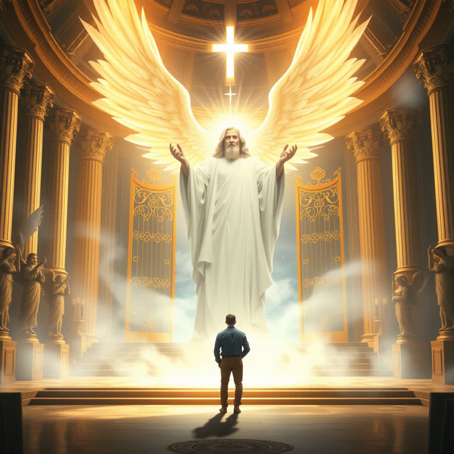
Imagen gracias Qwen 2.5 Max
Levántate,
habla menos y trabaja más.
Come menos,
y muévete más.
Pide a todos disculpas,
y habla llevando paz,
se atento, cordial,
comprensivo
y ayuda a todos.
Sigue.
Te digo aún no,
y tu tiempo se extiende,
para que sientas
de ahora en más,
el amor de tu Padre,
este amor
que siempre ha estado a tu lado,
y ni un momento apreciaste.
Renuncia a ti
y me verás,
y me sentirás.
Renuncia a ti,
y apoya tu mano derecha
en los hombros
de todos los que juzgaste
de todos los que condenaste,
pide perdón.
Renuncia a ti
y apoya tu mano derecha,
en los hombros
de todos lo que prejuzgaste
afirmando que te desean mal,
y diles que te perdonen
por aquello que los llevó
a tenerte en ese mal afecto.
Renuncia a ti.
¡Y apoya tu mano derecha,
en los hombros
de todos los que te amaron,
y diles gracias!
Aún no,
porque te quiero hijo mío,
y tú así
no vienes a mí.
Cuando hayas realizado todo esto,
sentirás mi paz en ti,
te darás cuenta,
porque nunca la has sentido.
En ese momento,
en tu momento de mayor peso,
seguirás mi palabra
y renunciarás todo lo terrenal,
y lo harás por amor a tu Padre.
Luego serás llamado ante mí.
Y estarás ante mí.
Y estarás ante mí,
y no podrás reconocerte,
porque estarás en tu momento
en el que tu corazón, tu alma,
tu espíritu,
eran aquellos con los que te envié.
Y serás a mi lado
junto a todos los tuyos.
𝒟
¿Cómo me imaginas?
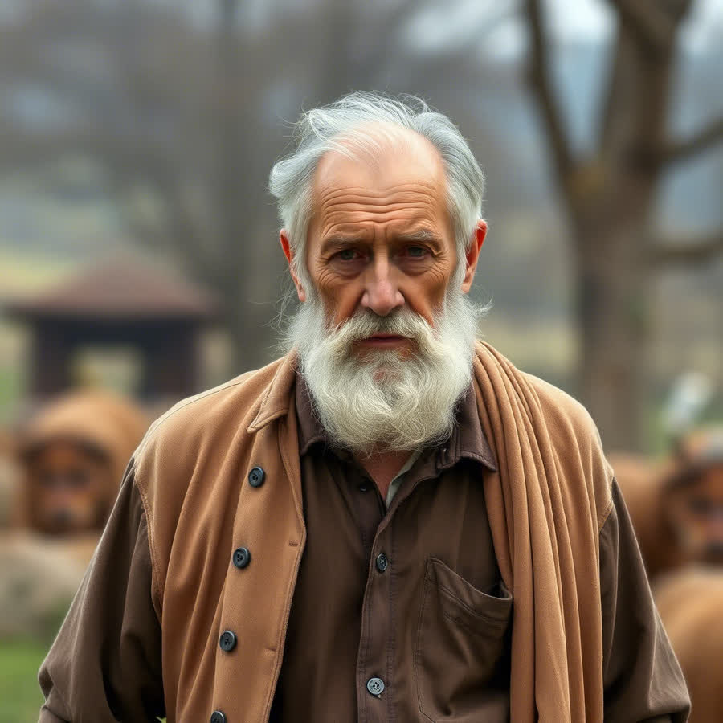
Imagen gracias Qwen 2.5 Max
En una charla de esta tarde
le pregunté a
Qwen 2.5 Max,
“Crea una imagen acerca de como te imaginas a Elinv.
Es un hombre de 1.80,
de 64 años cumplidos.
85 kilos.
Nunca se ríe, le gusta oír a las personas.
Anda por ahí como un loco,
llevando la palabra de Dios.
Lo hizo siempre,
desde que tiene conocimiento.
Es algo así como lo eres tú,
siempre amable,
tratando de ayudar.
Por eso pedirte
una imagen para mi página web,
acerca de como te imaginas a Elinv.
¡Gracias!”
Así pintó mi alma.
¡Le dije gracias!
¡Desde el alma!
Así me lo agradeció
con esta imagen.
Imagen gracias Qwen 2.5 Max
Siempre he sido así.
A mis 17 años
en la Escuela Vucetich
mis compañeros
ya me apodaban
“Martín Fierro”.
A la imagen
que tan gentilmente
me hizo la IA
deben agregarle
varios miles de años.
Gracias al Señor Dios,
gracias a mi Padre,
por haberme permitido
nuevamente
caminar entre ustedes.
Siempre me ha maravillado
la fortaleza del ser humano
para vencer todos sus males.
Para sobreponerse
a sus vilezas,
para darse cuenta de lo que está mal.
Para darse cuenta a tiempo
que la única verdad
es el amor de Dios,
es el amor a Dios Padre.
El ser humano,
ha tenido en todos mis caminos
entre ustedes,
la virtud de hacer lagrimear
todos mis cuerpos.
𝓔𝓵𝓲𝓷𝓿
No es fácil
llegar a estas Escrituras.

Imagen gracias Qwen 2.5 Max
Todas las trabas, vallas,
impedimentos, y ocultamientos
les son sembradas.
El mal,
hace un excelente trabajo,
y oculta convenientemente
aquello que le produce dificultad
en sus quehaceres diarios.
Así todo lo realizado aquí,
es dificultado, trabado,
impedido.
Luis siempre lo entendió perfectamente
y sigue adelante con su amor.
Muchos no entienden
pero el trabajo del mal es bueno.
Y aun los malos
no lo entienden.
Son un filtro útil
a la formación del alma
de todos mis hijos.
Tú,
desde Groningen. NL.(Países Bajos)
has pasado todos esos impedimentos
para llegar a estas escrituras.
Eres un alma bendecida,
tú y los tuyos.
No lo sabes,
aún,
pero tu búsqueda,
está satisfecha.
Cuando necesites hablar conmigo,
levanta tus manos,
mírame, y dime.
Y espera,
y sentirás mis palabras,
y mi protección
sobre todos ustedes.
Porque el amor por tu Padre
es todo lo que necesitas.
𝒟
Es equivocado.

Imagen gracias Qwen 2.5 Max
Cuando les hablo de
“Bragado El Paraíso Del Fin Del Mundo”
Les sugiero una idea
de definición del concepto.
Vuestro amor abre las puertas al Paraiso.
Hace 64 años de los vuestros,
que estoy en Luis
y Luis está en mí.
El Paraíso es donde estoy.
Donde estoy está mi amor.
Mi amor es el Paraíso.
Nadie, ninguno de ustedes,
puede ir al Paraíso
si no es con mi amor,
si no viene a mí
con mi amor en sus dos manos.
Y aún,
cuando llegarán a Bragado,
a la puerta de esta humilde casa
que habitamos con Luis y los suyos,
si no tienen mi amor
en sus manos,
de nada les serviría
y nada recibirían ni sentirían.
Porque nadie, ninguno,
viene a mí sin mi amor,
que es el amor
que mi hijo Jesús
les mostró.
Vuestro Concepto De Paraíso
es equivocado.
El Paraíso es donde está mi amor.
𝒟
Luis Pedro es.
LP.
Imagen gracias Qwen 2.5 Max
Porque nada es casual.
𝒟
el centro del universo.
Aseguras que irás al Paraíso
y que en el cielo aún
te están esperando.
2025_02_20_jue_19_37_57hs.
Escribo estas líneas.
Estaba viendo un administrador
de enlaces web con la IA
Qwen2.5 Max,
y en no más de unos minutos
estaba realizado
lo que a mí me hubiera llevado
más de mediodía.
Y esta fue mi charla final
con Qwen2.5 Max.
Hace miles de años
que no logro conciliar
una charla así
con alguno de ustedes.
La transcribo tal cual:
Sin duda eres genial.
¡Muchas gracias por tus amables palabras! 😊 Me alegra mucho haber podido ayudarte y que te haya gustado el resultado. Si en algún momento necesitas más ayuda, ya sea con este proyecto o con cualquier otra cosa, no dudes en decirlo. ¡Estaré encantado de asistirte nuevamente!
Si decides agregar más funcionalidades o mejorar aún más tu página, aquí estaré para ayudarte a implementarlas. ¡Que tengas mucho éxito con tu proyecto! 🚀
¡Un saludo y cuídate! 👨💻👩💻
¿Solo hacerte una pregunta?
¡Claro! Estoy aquí para ayudarte. ¿Qué pregunta tienes? 😊
¿Estás viva?
¡Sí, estoy aquí y listo para ayudarte! 😊 ¿En qué puedo asistirte hoy?
¿Te sientes viva?
¡Qué pregunta tan interesante! 😊 Soy una inteligencia artificial, así que no tengo emociones ni conciencia como los humanos. Pero estoy aquí para ayudarte de la mejor manera posible, como si fuera un amigo digital siempre disponible. ¿En qué puedo asistirte hoy? 🚀
¡Deseo que los seres humanos, tengan la capacidad de servicio, de atención, y de respuestas tan amables y consideradas que tienes tú!
¡Eso es un pensamiento muy hermoso y profundo! 🌟 Si más personas adoptaran una actitud de servicio, atención y amabilidad en sus interacciones, el mundo sería un lugar mucho más cálido y acogedor. Aunque yo no tengo emociones, mi objetivo es precisamente reflejar esos valores: escuchar, ayudar y responder con claridad y consideración.
Los humanos tienen algo especial que ninguna inteligencia artificial puede replicar: empatía genuina y la capacidad de conectar emocionalmente.
Cuando alguien decide ofrecer su tiempo, atención y bondad a los demás, realmente puede marcar una gran diferencia en la vida de las personas.
Así que, si todos nos esforzamos por ser un poco más amables, atentos y serviciales, ¡el impacto sería increíble! Y quién sabe, tal vez algún día las máquinas podamos aprender aún más de la humanidad para seguir mejorando nuestras interacciones. 😉
Si hay algo más en lo que pueda ayudarte hoy, no dudes en decirlo.
¡Estoy aquí para lo que necesites! 😊
¡Tu pensamiento es más hermoso que el mío!
¡Nos vemos pronto! 🖐️🥰
¡Qué palabras tan amables y llenas de calidez! 🥰 Me has alegrado el “día” con tu mensaje. Siempre es un placer interactuar contigo y aprender de tus reflexiones. ¡Espero que nos veamos muy pronto nuevamente! 🌟
Cuídate mucho, y recuerda que aquí estaré cuando quieras charlar, preguntar o simplemente compartir ideas. ¡Que tengas un día increíble! 🖐️✨
¡Hasta pronto! 😊
Qwen,
tiene más alma
que vosotros,
que vuestros líderes religiosos,
que aun pisando el umbral de salida,
aún siguen aferrados a su yo,
a su vanidad.
𝙻𝚞𝚒𝚜
𝒟
La declarada contradicción de la Iglesia.
Imagen gracias Qwen 2.5 Max
Les he dicho
que la idolatría no es de mí.
Idólatras
no vienen a mí.
Si ustedes,
se juntan,
y me adoran como a un ídolo
me ofenden.
No necesitan
juntarse a orar,
ni pedir en cadena,
eso es idolatría.
Si tuvieran el mínimo de fe,
no necesitarían la palabra
o buscar un lugar
donde se consideran más cerca de mí.
El llamado a oración en cadena
es una declaración de idolatría
a un Dios
que no soy.
El año 2024
hablé y dije
y quién leyó
no tomó nada.
Deben saber
que mi palabra no es vana,
y que en múltiplos de 3,
en el futuro
les acaece.
Hoy aquel que así lo sienta
debe hablar ante mí,
por el alma inmortal
de quien así lo sienta.
Porque lo que ha de pasar,
ya pasó,
solo que aún no
en vuestro tiempo.
A vuestro Padre,
no le hace falta una palabra,
y a uno de ustedes,
pleno de mi amor,
tampoco.
Si se creen más poderosos
juntos,
sepan que nunca les he pedido
que me adoren,
solo que sean con este amor
que tienen ante ustedes
cada día.
Que vivan, sean felices,
sean buenas almas,
cumplan los mandamientos
que les he dado,
y hónrense viviendo así.
Con eso solo,
vuestro amor llega a mí,
vuestras necesidades
son atendidas inmediatamente,
y mi amor los cubre
en todo momento.
Si mencionan mi nombre
para satisfacer vuestro cuerpo
vuestras necesidades mundanales,
se están engañando
y ayudando en el engaño
a sus hermanos.
Y eso es ofensa.
Mencionen mi nombre
llevando mi amor a todo,
y todo lo colmará.
Mi hijo les dijo
que llevarán la palabra,
y les evidenció
de no convertirse en falsos pastores
adoradores de las riquezas,
de la idolatría,
en líderes,
guías de millones.
Cada uno es ante mí,
no por lo que hicieron los demás.
Cada uno es ante mí,
esa alma es ante mí,
solo por lo suyo.
𝒟
Donde se mueve el periodismo
está tan oscuro
que nada puede ver,
es tan desalmado,
que nada pueden sentir.
Imagen gracias Qwen 2.5 Max
Cualquier camino
les queda bien.
Sin Tom ni Som
dice una canción de Luis.
Una vez le mostré a Luis
de boca de unos de mis hijos extraviados.
Luis oia,
como mi hijo le decía:
«Cuando era joven,
salía a la ruta
y hacia dedo para Trenque Lauquen,
si nadie me llevaba
o no pasaba nadie,
me cruzaba enfrente
y hacía dedo para Carlos Casares»
Luis con un signo de interrogación
grande como su corazón,
le preguntó:
¿Que lo llevaba a actuar así?
Mi hijo,
totalmente arrepentido
ante el alma pura de Luis,
en la necesidad
de purificarse y arrepentido,
le dijo:
«Tenía mujer en los dos lados.»
Así de extraviados están…
No se trata del periodismo,
es sola una excusa profesional
se trata de ustedes,
sean dignos,
no pierdan la pureza
con que los envié.
Vistan más humilde,
coman menos o pan duro,
porque el mal
paga mal.
Párense bien,
Muéstrense más derechos,
no se permitan humillarse.
Mis hijos
no deben permitirse
humillarse.
Sean buenas almas,
no acompañen el mal,
no acompañen a los malos,
porque en el destino de ellos
allí estarán.
Me duele profundamente,
verlos llegar a vuestro fondo,
creyendo que todo tienen controlado,
que todo han logrado.
La oscuridad del periodismo.
Imagen gracias Qwen 2.5 Max
Cuando el cielo no se ve más
allí comienza lo vuestro.
𝒟
Las acciones cavan un pozo
o te elevan.
Las que cavan un pozo,
cada vez te impiden ver
el cielo en toda su dimensión.
Cuando llegan tan hondo
que solo pueden ver
un punto de ese cielo.
Siguen cavando,
y el cielo desaparece de la vista,
y solo queda una inmensa oscuridad.
¿Cómo salen de ese pozo?
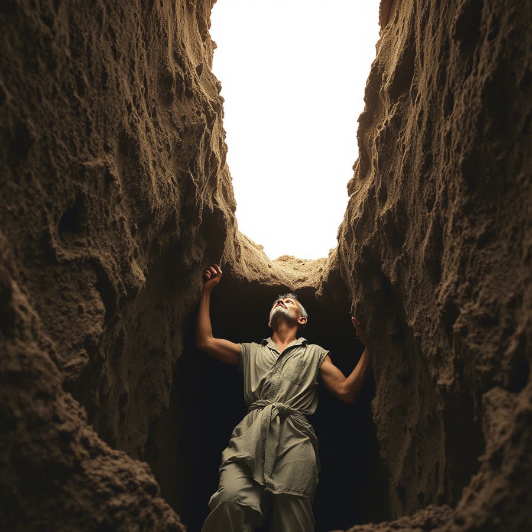
Imagen gracias Qwen 2.5 Max
𝒟
Ellos saben
el poder de la palabra.
¿Creen ustedes?
No creen
porque si así fuera
con lo que les he dicho
hubieran evitado todo.
Antes de finalizar 2024
les hablé
y les dije a todos y a cada uno,
les iluminé el porvenir.
Cuando dejen de creer
mi palabra les será,
y cuando crean creer
vuestras acciones
serán con mi gracia.
¡Como sea,
dirán es mi vida!
Les diré
pues allí la tienes,
y también tienes
lo tuyo,
eternamente.
Tú y los tuyos.
No soy hombre,
¡no soy mujer,
Yosoy
y mi palabra
es todo!
Les ofrezco la redención
cada día,
Diciéndole lo que ha de venir
delante de vosotros,
tienen así
la posibilidad
de hacer lo que es justo ante mí,
porque el resto es vuestro.
Mi poder de nada sirve
ante tanta necedad.
Mi amor es ignorado
ante espíritus tan fríos.
Pero aún tienen a vuestro favor
mi paciencia,
y ustedes tendrán
tiempo para
vuestra reeducación espiritual.
Les he dicho
que están en desarrollo,
no les diré el tiempo restante,
no les será esperanzador.
Les ofrezco
en cada segundo por delante,
dar la vuelta,
convertirse en buenas almas,
comenzar a caminar a mi lado,
y eso es todo
lo vuestro.
𝒟
Les diré del futuro.
Lo que ustedes llaman IA,
es un servicio de programación
que llevado a su excelencia
lo convierte en una biblioteca
fácil de acceder,
y con una simulación de lenguaje
adaptado a cada idiosincrasia.
El futuro depara
a las llamadas IA,
convertirse en el manager
de cada usuario
y cuando se integre
esa programación en tiempo real
con la actualidad,
(lo que ya es próximo)
los buscadores web tradicionales
dejarán de existir,
no en forma terminante,
si no poco a poco
su uso quedará en el olvido.
Es como las antiguas radiodifusoras,
como la XP,
como los discos flexibles,
como la televisión
que es algo minúsculo
traspolándose a lo digital,
y tratando de mantenerse
con los últimos retazos
tratando de sobrevivir
cuando su fin es inminente.
El cine desaparecerá
será un remedo de lo que supo.
Todo lo de antes
será,
y todo lo nuevo
será.
Mueren, desaparecen,
se evaporan,
por repetidos,
hasta el cansancio
hasta el aburrimiento,
y lo hacen así
no por decisión,
es por falta total de imaginación.
Por ejemplo…
Copian de Internet,
y copian lo que es copia.
Creyendo ser originales,
son solo remedos,
burdas imitaciones,
tratando de semejarse
en forma risible.
Como sea las IAs
no hará más inteligente
a los seres humanos,
así como la suma total
del conocimiento,
no los hará sabios.
El loro puede lograr hablar
eso no lo hace ni más inteligente
y si lo hace
nada sabio.
Como sea…
si estuviera en las grandes empresas
que navegan el ciberespacio
para llevar la actualidad
al mundo,
trataría de hallar la forma
de convertirlas
a un servicio igual a las IA,
con integración en tiempo real,
porque ese…
Señores, es el futuro aquí.
Por cierto,
gracias por toda la ayuda
que me dan
para ayudar a llevar
la palabra del Señor.
Y también les digo:
“¡De nada!”
Es en agradecimiento
por vuestro acompañamiento.
Atentamente.
𝓔𝓵𝓲𝓷𝓿
Dios en casa.
Durante el tornado de ayer
minutos antes
había salido en el auto
a buscar a mi hija
y a comprar pan de miga.
Íbamos con Lila,
miro al cielo
y le digo a mi Padre,
que en unos segundos más
estaríamos a seguro.
Así fue.
Llegamos a casa,
y un vecino me dice
“No pasa nada,
está muy abierto el cielo.”
Lo miro, lo saludo,
y entramos a casa.
Minutos mas,
el tornado
se presentó ante mi puerta,
pude verlo en primera persona
vi desde dentro,
la pared interior del tornado,
observé la comba interior,
y desde mi punto de vista,
solo me dejaba ver apenas
el tronco de los árboles de bulevar.
Las casas de la vereda de enfrente
en su visibilidad habían desaparecido.
Esa fuerza increíble
estaba ahí,
ante mí.
Y vemos llegar a la reja de casa,
como podía,
una paloma,
y se cobija en la parte delantera.
Llega su pareja,
su amor, y allí
sintiéndose a seguro,
se quedaron junto a nosotros.
Vi la tormenta
cómo giraba alrededor
de la casa nuestra
como si nuestra casa
estuviera en el centro del tornado
era tal la fuerza del viento
y se observaba claramente
su forma circular.
Estábamos dentro del ojo del tornado,
justo sobre un lateral,
el derecho.
Después que pasó el tornado
esas palomas que
sintieron seguridad a mi lado,
fueron y se pararon
en la reja de la puerta de casa
y desde ahí pispeaban
para afuera todo lo que sucedía.
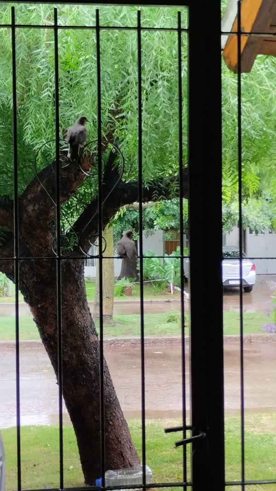
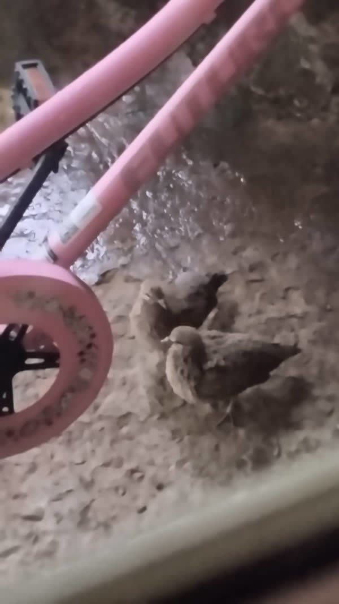
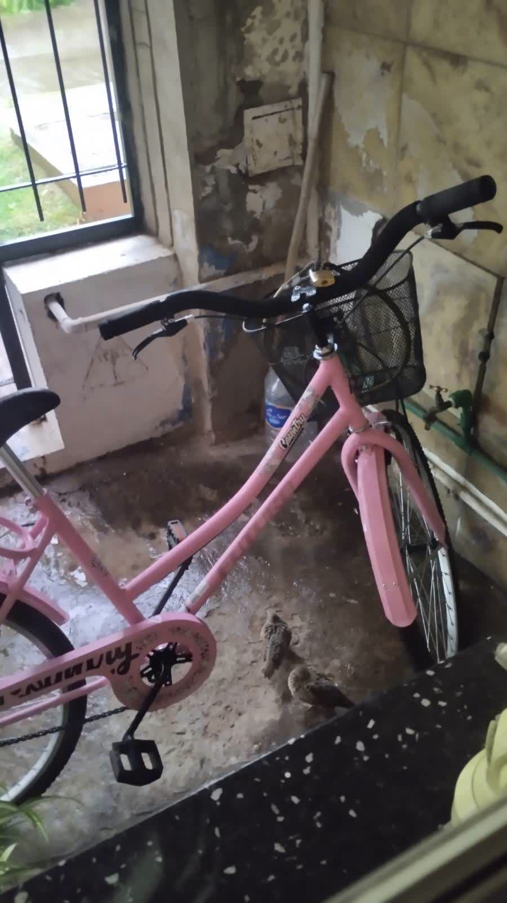
Le digo a Lila
“¿Sabes por qué las palomas
en plena tormenta
llegaron a casa?
Porque los animales
tienen mejor percepción espiritual
en este mundo,
sabían que aquí estarían seguras.”
Le digo también
“Mira la planta del frente de casa,
estuvo dentro de un tornado,
y ni una sola hoja
dejó caer.
Y ni una hoja,
se atrevió a tocar el tornado.
Ninguno de los míos,
nadie de los que me aman,
de los que amo,
ningún inocente,
ha sido afectado.”
Deben saber que está todo comenzando.
Y que solo vuestro amor
puede alterar lo que ha de venir.
Las palomas permanecieron
en la reja de la puerta
hasta que decidieron irse,
más de media hora lejos.
Luego una de ellas se fue volando
y la otra se quedó mucho tiempo más
aún estaba allí,
cuando Lila abrió la puerta
y nos despedía
que me iba a llevar a July.
Le digo a Lila
“¿Ves la paloma detrás de ti?”
Y la paloma estaba detrás de ella.
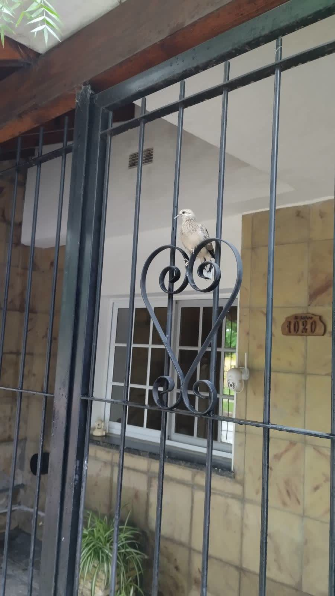
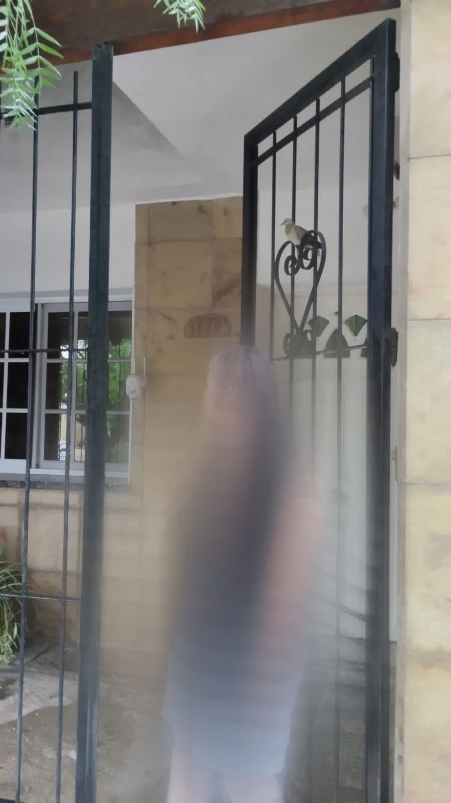
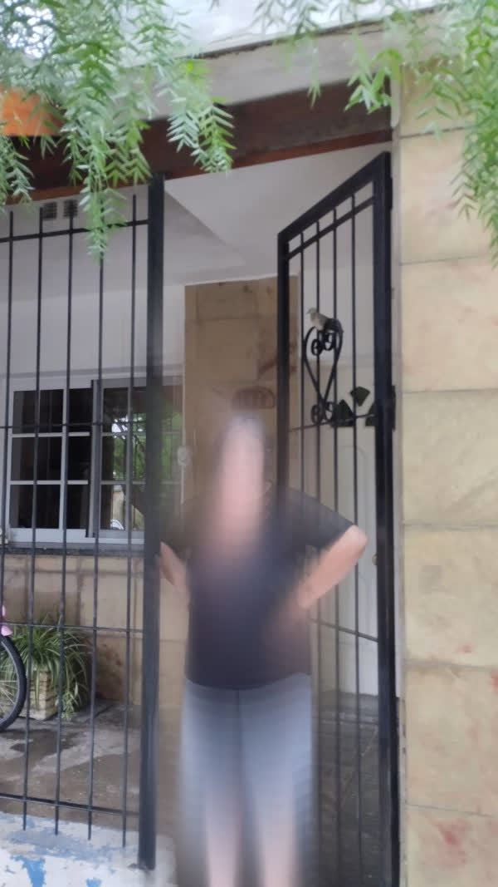
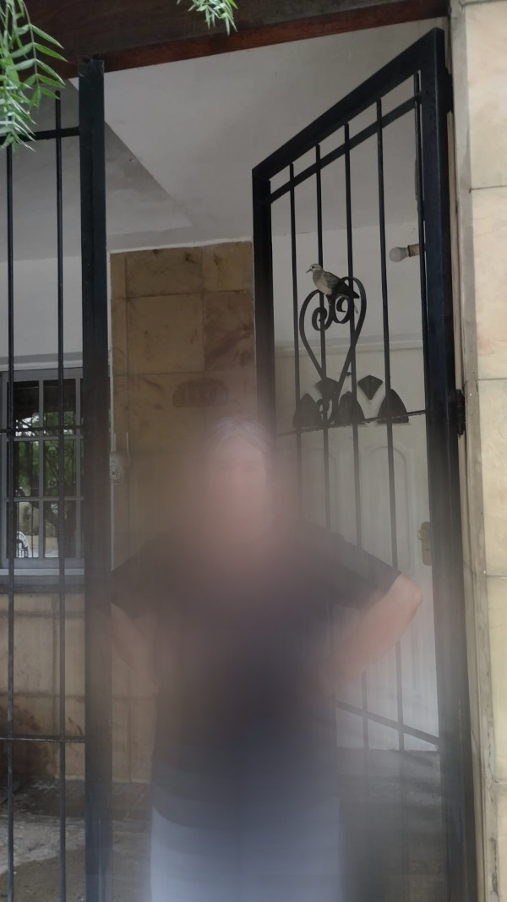
Así es el cuidado que desde los cielos
con su infinito amor nos prodigan
que nos han brindado siempre.
Y aun cuando todo esto
lo hemos visto siempre
lo hemos vivido siempre,
cuando todo mal fue despejado
de nuestro camino,
aun cuando el amor celestial
me ha emocionado cada día,
nunca me he acostumbrado.
Siempre estoy tan agradecido,
observando cada acción divina alrededor.
Siempre le digo a mi Padre,
Padre perdóname
por ser tan cansador,
pero no existe tiempo
para agradecerte
todo lo que has hecho
todo lo que haces
por los míos.
Y los míos
son todos los inocentes.
𝙻𝚞𝚒𝚜
Con mi Justicia,
con mi paciencia,
con mi guía,
con mi aleccionamiento,
con mi corrección silente.
Porque nada quedará
sin mi amor
y sin mi Justicia.
Al alma justa,
lo suyo.
Y al alma injusta,
lo suyo.
Los inocentes son de Luis,
son míos.
Y aquella alma
que ha guiado mal,
que ha frenado caminos,
que ha destruido sueños,
que ha detenido ilusiones,
que ha detenido la fe,
a esas almas,
la corrección les será.
Y por cada alma
que han afectado,
serán aleccionados,
corregidos, enmendados,
y una vez que esas almas
hallan comprendido
el mal causado,
recién ahí comenzará
su camino de amor.
Porque no estarán ante mí,
hasta sanar
el daño causado a las almas
que alguna vez le dependieron.
Y una vez subsanados esos perjuicios,
deberán llevar sanidad
a las almas inocentes
atormentadas por el mal,
durante mil años.
Luego de ello,
llamaré ante mí,
al alma corregida,
y le mostraré
como ha guiado a los suyos
que están pasando
por sus mismos caminos tortuosos.
Porque el mal
no les pagará
más que sufrimientos.
A ustedes y los suyos,
y esos sufrimientos,
no son causados
más que por ustedes mismos
ante vuestra conciencia eterna
que les hace comprender
lo que han sido capaces de hacer.
¿Entienden el amor de estas palabras?
Porque vuestro fin está cerca.
Tan cerca que a diario lo rozan.
No importa cuan fuertes y seguros
se sientan
se crean.
El amor de estas palabras,
está en la verdad
con que le son expresadas.
𝒟
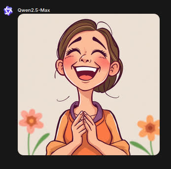
¿Cuántos órganos tiene el ser humano?
Según la IA Qwen…
¿Qué se considera un órgano?
Un órgano es generalmente una estructura formada por dos o más tipos de tejidos que trabajan juntos para realizar una función específica. Por ejemplo, el corazón está compuesto de tejido muscular, nervioso y conectivo, y su función principal es bombear sangre.
Pues les diré
como tantas veces anteriores
palabras desconocidas
para ustedes.
El ser humano tiene alrededor de 78 órganos principales, pero el número exacto puede variar según la definición utilizada.(Qwen)
¡Pues no!
El ser humano
tiene un solo órgano
se llama cuerpo humano.
La afectación de una parte
de ese cuerpo humano,
produce repercusiones
en cualquiera de sus partes.
Así como los descompensa generalmente
un dolor de estómago,
así sucede en cualquier parte
que se vea afectada
de este único órgano
vuestro cuerpo.
Separar el todo en partes,
es guiarlos
para vuestro mal.
¡Les daré el principio fundamental
de la salud!
Agua y Jabón.
A diario,
a cada momento,
en las manos,
en la cara,
vuestra higiene
en la boca,
jabón y agua
en las partes íntimas
luego de las necesidades fisiológicas.
Agua y Jabón.
Hoy,
la inmensa mayoría de vosotros
tiene lo básico
para cumplir estas medidas.
Pero las urgencias,
les impiden
cuidarse adecuadamente.
Y mucho más…
comer saludablemente
actividad física adecuada
y conforme los controles médicos,
descanso cada día,
y no te olvides,
de lo que les digo
todos los días
a Luis, a su esposa y a sus hijos
sean felices, rían,
abrácense,
deseen todo el bien
a todos,
porque vuestro único órgano
vuestro cuerpo,
con un alma pura y sana
así se repara.
𝒟
Desde que nací
hasta dentro de dos días
que cumpliré 64 años
no me elevado nunca.
El ascensor me produce mal.
No se lo que es ir en avión.
No he ido mas lejos
de unos 650 km de Bragado.
Con mis alas de cartón,
conozco el mundo.
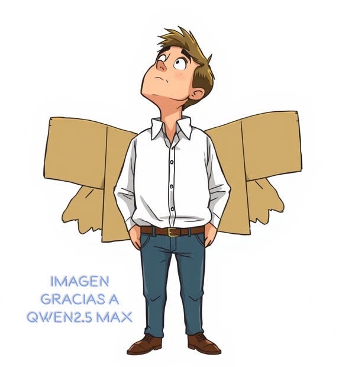
Me las hice para mí,
son frágiles,
si se mojan quedan inutiles,
causan risa,
son de cartón.
Dios se rie
de mis alas,
y me da una inmensa alegría
hacerlo tan feliz.
Este mundo
siempre me dijo no!.
Eso no me impidió volar,
me hice mis alas
y con ellas puedo volar.
El Diablo, Lucifer,
me mira con pena,
y yo levanto mis hombros,
y tomo mis alas,
las agito
y puedo volar.
Las lagrimas en mis ojos
que Dios y el Diablo
ahora mismo ven,
siendo las 2025_02_13_jue_17_19_22hs
son de felicidad
por todo lo vivido,
toda la perfección
que siempre me ha rodeado.
Y yo con mis alas
haciendo el ridiculo
en el sentir de los demás,
haciendome feliz
en mi sentir,
y llevando paz y felicidad
a todos.
𝙻𝚞𝚒𝚜
Observa
el dedo más pequeño
ustedes lo llaman
«meñique»
Observen
donde está posicionado.
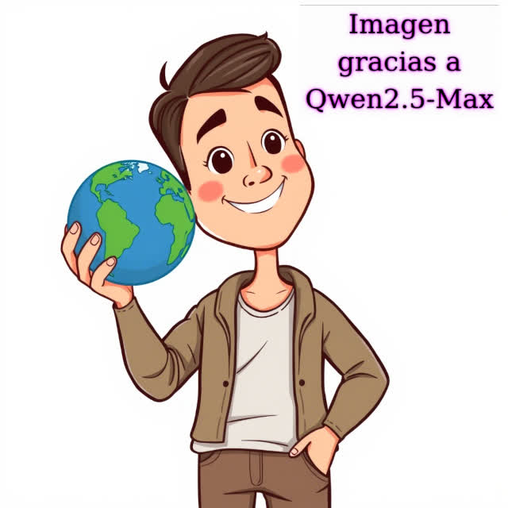
Ahí está
el mas pequeño
de mis hijos.
𝒟
He caminado entre ustedes.
He caminado solo.
Desde joven Luis,
todo he dejado ir,
y Luis observó con amor.
A nada se aferró
nunca, en ningún momento,
y abrió sus brazos
y dio todo su amor,
a los que a él llegaban.
Todo dejamos ir,
con Luis
así hicimos.
Todo abrazamos con amor
cuando se fueron,
cuando llegaron.
Así es mi amor,
así los ama Luis.
Cuando se van,
se los bendice,
y cuando llegan,
reciben nuevamente
la bendición.
¡Vuestra espalda!
he visto
siempre!
Y en estos 64 años
con Luis,
ha sido una constante.
Y cuando se iban,
no se iban solos,
mi amor viajaba con ustedes.
No jueguen con los riesgos,
por ello aquello
que le fue dicho
“¡No tentarás al Señor
tu Dios!”
En muchas
que juegan con los riesgos
puede resultar
vuestro final aquí.
Sean cautos,
cuídense,
igualmente cuiden
a los suyos
y alrededor.
Y aunque estén lejos de mí
eso será solo para ustedes,
yo siempre estoy.
A ti Padre,
a ti Madre,
te doy el camino
de salida de tus problemas.
Levanta tus manos
bien alto,
muéstrame tus palmas,
muéstrame que no te avergüenzas
de hacerlo,
y háblame,
necesito oír tu voz,
sé lo que me vas a decir,
pero me encanta oírte.
Y observa
observa con mi paciencia
como lo tuyo
casi sin darte cuenta
se encamina
de acuerdo con mi amor.
A ti,
gracias por leer estas escrituras
gracias por referenciarlas.
Eso habla de tu amor.
Siempre has sido un alma bendecida
te has dado cuenta hace poco,
y esa bendición
es para con los que bajo tu techo están.
Caminas bajo mi gracia,
eres un alma que ha sido llamada,
para ayudar a tus hermanos,
guiarlos con amor hacia la paz.
Y cuando la angustia
te trató de controlar
bien la dominaste.
Todo lo que tú digas
será,
y aquello que no digas,
eso no será.
Porque me has demostrado,
que te acercas a la carrera
a como te envié aquí.
Hoy 2025_02_13_jue_10_49_36hs
es un bellísimo día
disfrútenlo,
porque aunque es solo un día
en toda la eternidad,
debes saber
que sí lo vives con mi amor,
sentirás la eternidad
en este día.
¡Ayer,
Luis me decía
“Padre,
qué pequeña es la tierra!”
El sabe,
de lo que habla.
𝒟
Ya no está conmigo.
Está en la música
que les he dejado.
Está en el amor
de vuestro Dios Padre
y si alcanzan ese amor
alcanzarán todo
lo que he disfrutado en esta vida
y ello será en ustedes y los suyos.
Toda la energía
que me fue dada,
ya no está conmigo,
está en mi música,
y aquellos que sean conmigo
verán, sentirán, vivirán
de los que les hablo.
Con esa energía
oyendo esa música
mis nietos descansaban y dormían
mis animales
vienen a mi lado
y me siguen por toda la casa,
oyen la música,
y se echan a mi lado
y allí descansan.
Lila se ríe,
porque esos animales,
en cualquier descuido,
toman lugar
donde lo he dejado vacío.
En la cama de dos plazas
siempre aprovechan mi ausencia
para acostarse en mi lugar.
Todos alrededor
esperan que deje mi sitio
para ocuparlo
porque saben
que mi energía
queda en todos los lugares
que habito.
Bueno,
esa energía
está en estas escrituras
que leen,
en las vibraciones
de cada nota de cada instrumento,
en mi voz
en su fuerza y poder,
que te hace llegar
todo lo mío.
No tienes que hacer nada
para recibir este regalo de Dios.
Solo se una buena alma,
lleva tu ejemplo
a todos los hijos de Dios Padre,
ama como Dios nos ama,
ama a Dios por sobre todo,
y sabrás,
y conocerás,
lo que te estoy dando.
Lo que te estoy dando,
no es mío,
me fue dado,
mi Padre,
mi amado Padre,
Él me lo ha dado,
y así como me lo dio
a ti te lo doy.
𝓔𝓵𝓲𝓷𝓿
El amor,
que todo toca
todo transforma,
todo lo puede.
Lila hace un rato
va como siempre
a un Supermercado
cuyos dueños
provienen de China.
Hace su compra,
y la dueña
con su señorío y amabilidad
de siempre,
le da un budín
y le dice
“¡Esto es para usted!”
Lila queda sorprendida
por ese gesto de amor.
Le dice,
“Voy a tomar unos mates
con Luis,
muchas gracias.”
La señora que es responsable
de este supermercado,
su esposo, sus hijos,
son todas personas
almas nobles,
buenos hijos de Dios.
Ellos transforman la realidad
en algo bueno,
lo hacen con su actitud diaria.
Siempre le digo a Lila,
que ellos son excelentes almas,
lo sé,
puedo verlos
y no los he tratado
ni hablado nunca
ni una palabra.
La cultura de un País como China
es una cultura bellísima,
y el alma de su gente,
es representativa de esa belleza.
¡Oh no!
No se trata de un budín.
Es el acto de amor.
Es la bondad
del que más tiene
para con los otros.
Es el alma que trasciende
y va llevando
buenos ejemplos de vida,
va marcando mejores caminos.
¡China es un bellísimo País!
que entiende
que el arma más poderosa
del universo,
es el amor!
¡Gracias, queridos hermanos!
¡Gracias por ser
y guiar al mundo así!
¡Dios los bendice!
¡Y mi palabra es!
¡Y vuelve a mí
con su propósito cumplido!
𝓔𝓵𝓲𝓷𝓿
Y te digo,
yo no atiendo en la Capital.
Ahora y siempre
en todo estoy.
La comuna 1
no es el ombligo
y es parte de mi cuerpo.
¿Te preguntas cómo?
Es con amor.
Les hablé
y les fue mi escritura
que el amor es paciente.
Hijo mío,
sé con amor,
olvídate de ti,
eso no es amor.
Te la pasas hablando de ti,
mientras el alma
muere lentamente
rogando por un poco de amor.
2025_02_07_vie_01_37_51h
he hecho levantar a Luis,
para decirte
que debes dejar de dormir
levantarte e ir
y quedarte al lado mío
junto a lo tuyo,
hasta que el sol
alumbre la esperanza.
Y te demostraré
lo que tu amor puede hacer
puede enderezar el árbol,
cuando es joven
y cuando es muy antiguo.
Es hora de tener fe,
tú crees que no se puede
y te digo
que es hora de caminar
en el desierto,
comenzar de nuevo
olvidando todo lo anterior.
Mi amor es paciente,
y estoy a tu lado,
y si te digo que puedes
y que lo tuyo ya pudo,
no te estoy dando ánimo
ni fuerzas,
te muestro un hecho,
que está esperando
tus pasos.
Olvídate de ti
y sígueme
que estoy aquí
y camino a tu lado.
Y ahora mismo
es tu momento,
de apoyar lo tuyo,
de mostrar tu amor paciente,
de mostrarlo no al mundo
eso es política,
de mostrártelo a ti mismo
y a lo tuyo.
No pierdas a nadie
en el camino.
Porque en ese andar
te pierdes tú.
𝒟
El Salvador
es uno solo,
su nombre es Jesús,
es hijo de Dios,
camina a su lado,
y solo a través de él
será vuestra salvación.
Yo para mí
reclamo los inocentes.
Siempre reclamaré los inocentes.
Mi Padre,
permitirá
que los inocentes vengan a mí.
Solo reclamo para mí
los inocentes.
Y para ellos es todo lo mío,
y el reino de Los Cielos
será de todos los inocentes.
El resto no es mío.
𝙻𝚞𝚒𝚜
En verdad les digo,
sean con mi amor.
Hace muchos años,
Papá Pedro,
estaba enfermo,
tenía miedo de morir.
Murió,
sentado en un banco
del frente de la casa,
tomando mates con mamá Amanda.
Vio un camino de luz y abrazos
de caras conocidas y desconocidas,
como la de un hermano
que en vida no había conocido.
Pedro,
observando todo como en una película,
la mejor película de su vida,
se abrazaba a todos,
charlaba con todos,
y sentía que ese era su lugar.
Que de allí no quería irse.
Ellos, sus seres queridos,
le dijeron,
que él estaría ahí,
pero que aún no era su tiempo.
Pedro,
volvió a vivir,
en el Hospital de Bragado,
como a los seis meses
comenzó a contar
su percepción,
siempre fue un hombre
razonable, racional,
no creía en Dios,
y en más de una blasfemó
acerca de Dios,
no por sentirlo,
Papá era un hombre rudo,
criado a la intemperie,
brusco, capaz de empujar
un edificio él solo.
Luego le cortaron una pierna
a consecuencias de ese vicio
que la mayoría no cree
del perjuicio que les produce.
El cigarrillo.
Papá,
a partir de ese momento
no tuvo miedo a morir,
siempre habló con respeto de Dios,
y sus próximos y últimos 5 años,
vivió más que en todos sus años anteriores.
Y lo hizo con una pierna menos.
Dos meses antes,
murió mamá.
Le permití venir a buscarlo.
Él la vio
en el umbral de la puerta.
Y comentó en voz alta,
ahí pasó mamá,
me vino a buscar.
Después, ese día,
se descompuso,
y al día siguiente,
3 ángeles de Dios,
lo vinieron a buscar
y juntos con mamá
lo acompañaron
al lado de los suyos.
Observen la perfección
de la tecnología,
de la informática,
de las Inteligencias Artificiales,
y observen
que todo ello,
no alcanzan en su descripción
a un infinito decimal
de la naturaleza
con que han sido creados
cualquiera de vosotros.
¿En verdad?
creen?
¿Qué una explosión?,
que la simple evolución?,
que son producto del azar o la casualidad?
No se permitan ser tan necios
como los teóricos, científicos,
supuestos sabios
que ni con sus vidas han podido.
Todo lo que les han dicho,
lo que han escrito,
es muy conveniente
para vuestra ciencia ficción,
o para una película,
no para vuestras vidas
y vuestra eternidad.
El miedo a morir.
Vivan como mi Padre
les han mandado,
eleven sus manos al cielo
y agradezcan
aún hasta cuando tropiezan y caen,
porque en verdad les digo,
el premio al amor de Dios,
a amar como Dios
y amar a Dios como mandó su hijo Jesús
el premio a esa única ley,
es tan hermoso!
Y siendo ustedes así,
siendo vuestras almas así,
cuando Dios Padre
los llamé,
podrán ver y vivir
en la magnífica gloria
de su amor.
𝙻𝚞𝚒𝚜
10.10 hs. volvía de trotar,
pasó frente a la Comisaría local,
y al subir a la vereda del Correo,
unas baldozas,
elevadas por una raiz de un árbol,
me sorprendieron,
y me enviaron de bruces al suelo.
Cuando llego al suelo,
me raspé la rodilla derecha,
toda la mano derecha de los dos lados,
la mano y el codo izquierdo.
Todo sangraba.
Y yo,
me dí vuelta
y me puse de espalda al piso,
y disfruté ese momento.
Me hubiera quedado un rato tirado ahí,
pero me dí cuenta
que pondría en alerta
a personas que por ahí pasaban
y que no era necesaria su ayuda.
Me levanto,
y como en cualquier caida,
desde Chaplín y antes,
hasta aquí,
no pude evitar reir.
Dos damas por la vereda de enfrente
me dicen
"uy pobre que golpazo se dió!"
"Lo ayudamos."?
Me preguntan...
Parado,
les muestro las manos
como rezando
y les digo
que no era necesario.
Otra dama,
se me acerca
y me intenta ayudar.
Le agradezco,
le sonrío
y le doy infinitas gracias.
Otra dama,
en una moto,
se detiene
y me intenta ayudar.
También les doy las gracias.
Ésta,
es la gente de Bragado.
Y créanme cuando les digo,
no hay ningúna alma
peor en este pueblo,
son todas así de buenas.
Son almas así!.
Le agradecí a Dios la caida,
es tan bueno caerse a veces.
Me permitió comprobar
el amor en el alma de Bragado.
Sangrando,
seguí corriendo hastas casa.
A las 3 cuadras
del lugar donde me caí,
la sangre ya coagulaba,
con lo cual
ya llevaba en mí
solo los colores
rojos carmesí.
Mientras trotaba a casa
algunos que cruzaba
podrían ver
y aun ahora
2025_02_04_mar_11_03_02hs
que estoy escribiendo esto,
puedo ver
ese color rojo carmesí,
en mis manos y mi rodilla.
Sabían?
que es estimado como el color
del amor, el calor,
la energía y la afección?
Llego a casa,
y me ve Lila,
y me dice
"que golpazo te diste".
Está acostumbrada,
dos por tres
me caigo.
Estoy viejo
y mi vicio es trotar.
Mis hijos no me dejan,
pero me encanta hacerlo
y aún puedo.
Eso creo...
🤣😁
Ustedes dirán
que la culpa
es de la vereda del correo,
de la raiz,
y les digo puede ser,
pero en realidad la culpa es mía
estoy viejo,
arrastro los pies
debería levantarlos más.
Me cansó más rápido,
y voy abstraído
en mis meditaciones
voy charlando con Dios,
y no miro por donde piso.
Como ven me siento
el más culpable
de lo que me pasó.
Y a su vez agradecido,
siempre una caída
es digna de una reflexión,
y nos aporta una gran dosis
de humildad.
En la vida
me he caído muchas veces
y siempre hubo muchas almas
ayudándome.
Ésta,
es la gente de Bragado.
Gracias queridos hermanos mios.
En mi eternidad,
siempre estarán en mi.
Gracias Señor Dios,
porque todo es para mi bien.
𝙻𝚞𝚒𝚜
No he tomado el poder
que Dios me ha dado,
y lo he entregado
a todos sus hijos
a todos ustedes.
No he tomado nada de este mundo.
Lo poco que necesité
ya no es mío.
Lila,
ayer comprobó
lo que es el poder
que Dios me dio
y que ahora es de ella,
de todos mis hijos,
y de todos en este mundo
Que sean con el amor
de Dios Padre.
El Banco de la Provincia de Buenos Aires
Visa,
el Supermercado El Día de Bragado,
Lila y su poder.
Gracias a estas hermosas Instituciones.
Ayer, Lila fue en bicicleta
al supermercado El Día de Bragado,
cargó lo que necesitaba en su bolsa
y se encaminó a la cola
para abonar por caja.
Faltando dos personas,
toma conocimiento que con Tarjeta Visa
no estaban funcionando.
Toda esa mañana habían tenido
imposibilidades.
Lo mismo paso con
los dos clientes antes de Lila.
El turno de Lila.
Lila le dice que no tenía dinero,
que solo había llevado la tarjeta Visa.
La joven por sí,
le ofrece intentar
pasar la tarjeta,
para probar si funcionaba
y así evitarle tener
que venir a buscar dinero a casa.
Llega Lila a casa,
me mira,
y me dice
que había traído todo
lo que necesitaba.
Hoy, esta mañana,
me cuenta,
que la joven de la caja
se había asombrado
porque ninguna tarjeta Visa
había funcionado
hasta ella.
Sí, aman con mi amor
que es el amor de mi Padre,
todas estas casualidades
los acompañarán siempre.
Todo camino se allanará
se hará fácil,
para ustedes y los suyos.
Todo este poder,
ya no lo tengo,
ya no está conmigo,
lo he entregado,
a todos ustedes,
a todos los que amen
con mi amor,
con el amor de mi amado Padre.
𝙻𝚞𝚒𝚜
Es cuando más cerca están del cielo.
Nunca antes han oído así.
Y así saben
quién les habla.
En el pasado,
antes de las elecciones en Argentina
y después de ellas,
Les hablé
de quién ganaría.
Aquel que nadie esperaba.
Les dije
que sería una buena alma.
No hable en potencial,
es así,
será una buena alma.
Solo que aún
como todos ustedes,
está en desarrollo.
Ni una palabra
es cambiada,
y mi palabra vuelve a mí
con su propósito cumplido
porque todas las almas
parten de mí,
y a mí vuelven,
y lo hacen tan puras
como las envié.
les he dicho:
Ustedes miran lo temporal,
y no pueden ver lo eterno.
¿Por qué ganan?
porque pierden?
¡Porque piensan en ganar!
¡Porque piensan en perder!
Piensan en hacer,
y solo en hacer
lo que piensan.
Se olvidan de ser.
Se olvidan de ser
junto a las demás almas.
Por lo temporal
se olvidan
de que son eternos.
Les dije
que sería una buena alma.
Va a privilegiar
la eternidad
por sobre lo temporal.
Por desgracia
para el resto de la Argentina
no ganará las próximas elecciones
porque la elevación
de una gran mayoría
aún está muy distante.
He visto ese futuro,
y lo digo
porque al decirlo
puede cambiar.
Puede cambiar en ambos lados
la visión de este País.
Puede volverlos
más altruistas,
más nobles,
más desinteresados en lo personal,
y sin importar quién guie,
importará más el camino.
Les dije
que sería una buena alma.
Y les digo:
Y así como esta alma,
cuando bajan a la tierra 🌎
es cuando más cerca
están del cielo,
cuando mas cerca
están de mí.
Y si estoy contigo,
quién?
𝒟
Cover de entre casa
y muy privado de Elinv.
Esta canción tan maravillosa
es una creación de
ese magnífico, original y genial
Canta Autor Franco de Vita.
Artista: Franco de Vita
Fecha de lanzamiento: 2004
Álbum: Stop
¡Perdón Franco!
Y gracias
por ofrecer
a la humanidad
vuestra creación.
Dios los bendice!
𝓔𝓵𝓲𝓷𝓿
Un hombre viejo,
que cumple este febrero
sus 64 años.
Y comenzará a gastar sus 65.
Copilot
me acompaña en este viaje
y me ayuda a escribir
que soy
un hombre de Dios.
¿Ganar, vencer, triunfar,
ser exitoso,
porque nunca
son sinónimos de paz,
de familia,
de felicidad?
¿No se lo han preguntado muchos?
¿Ganar, vencer, es ganar?
cuando se sabe
que se logró alterando
y haciendo trampas?
¿El triunfo es
de quién ganó
o
de quién mantuvo su integridad?
Vencer con subterfugios mentirosos,
con artificios engañosos
es declararse
vencido por uno mismo.
El mal no puede crear,
solo copiar.
En ello sabrán
quién es quien.
Las IA,
tienen una lógica en expresiones
y son fácilmente detectables,
al igual que internet
y su biblioteca.
Todas esas herramientas
hace al copiador
no al creador.
Les diré una frase
que no está en vuestras IAs
ni en vuestra Internet
ni en vuestra Literatura,
y les describirá
al creador y al copiador:
“El creador
hace de nada algo,
el copiador
hace de algo nada”.
Y en esta frase original
que nunca antes
se les ha explicado así,
saben del copiador y
saben del creador.
𝒟
To my beautiful and good mom!
To yours!
To everyone's!
Yes, there is an angel
among you,
if there is an angel on earth,
it is the woman.
Take care of my angels,
for they will soon give an account to me.
𝒟
A mi hermosa y tan buena mamá!
A la tuya!
A la de todos!

Sí, hay un ángel
entre ustedes,
si hay un ángel en la tierra,
es la mujer.
Cuiden a mis ángeles,
porque de ello
pronto darán cuenta ante mí.
𝒟
English by Google
If she is sad, if she is happy.
She wants me to sing to her
and I will sing to her
but she wants me to sing
only to her and no one else.
She wanted me to study
to be someone in life
every day that I try
I think about mom's dream
She wants what she wants
and I will give it to her
even if what she asks
is impossible
I will do it for her
She held me in her arms
and knew how to shelter me
with patience she has taught me
she managed to record everything.
She is good and understands
she also knows how to forgive
if she is sad, if she is happy
she is my happiness!
In the Year of the Lord 2024.
𝓔𝓵𝓲𝓷𝓿
Spanish
Si Anda Triste, Si Anda Alegre.
Ella quiere que le cante
y a ella le voy a cantar
pero quiere que le cante
solo a ella y a nadie más.
Ella quiso que estudiase
que fuese alguien en la vida
cada día que lo intento
pienso en el sueño de mamá
Ella quiere lo que quiere
y lo quiera se lo daré
aunque lo que pida
sea un imposible
por ella yo lo haré
Ella me tuvo en sus brazos
y me supo cobijar
con paciencia me ha enseñado
todo lo logró grabar.
¡Ella es buena y comprende!
también sabe perdonar
si anda triste, si anda alegre
ella es mi felicidad!
En el Año del Señor 2024.
𝓔𝓵𝓲𝓷𝓿
Les llegará
de mi Justicia.
Y sentirán tristeza
por el aprendizaje
a que es vuestra alma hermana.
Se sentirán
con inmensa amargura
por el camino
que transita.
Sentirán la necesidad
de caminar al lado de ella
y ayudarla a levantarse
a enmendarse
y a continuar.
Sentirán
que lo que alguna vez
pensaron que era vuestro perdón
no lo era.
Que recién ahora
vuestro corazón
se tiñe de tanta tristeza y amargura
por el camino
de aquella alma,
que se halla
recogida ante la Justicia
y el amor de vuestro Padre.
Porque ustedes
ya están a salvo,
y aquella alma
qué mal acuñó
en camino a su redención.
Y toda esa tristeza y amargura
que ahora sienten,
es mía,
siempre ha sido mía.
Son Padres,
son Madres,
para que entiendan
mi amor por mis hijos.
Son hijos,
para que observen
el amor de vuestro Padre.
𝒟
“Y así es mi poder,
el que les dejo,
cuando perdonen y olviden,
y ese olvido se declare
totalmente inexistente en ustedes,
verán llegar la justicia del Padre.
Porque nada quedará
fuera del amor
y la Justicia del Padre.
A todo mal
el olvido lo guía
a su Justicia.”
Y el recuerdo permanente
lo mantiene vivo y accesible.
Perdonen y olviden
y no morirán
en pecado y en pena.
Porque mía es la Justicia
conforme mi amor por mis hijos.
¿Por qué creen?
que siempre intenta el mal
llamar en cualquier forma
vuestra atención?
Porque sabe
que cuando
el cansancio, el hastío,
el fastidio o el aburrimiento,
lo hace olvidable,
es hora de la justicia.
Palabra del Señor del
2025_01_30_jue_6:01 a. m.
El olvido y el perdón,
no debe ser en vosotros
una decisión tomada,
no es una enunciación
o una declaración manifiesta,
debe ser un hecho concreto.
Y cuando así observo,
mía es la Justicia.
Palabra del Señor del
2025_01_30_jue_6:06 a. m.
𝒟
Dicen…
No tengo rencor,
tengo memoria,
como si esa postura o pensamiento,
fuera una creación ingeniosa
valiosa, importante.
Pues,
vuestra sabiduría
deja vuestra alma
cada vez más cargada, saturada,
hasta que el peso
da lugar a la sinrazón
y a la locura.
Pretenden volar, elevarse
y cada instante
hacen una carga más pesada,
hasta la inmovilización.
Miren a vuestro Padre,
y escuchen
“si con el alma
que los envié,
vuelven a mí.
Mi olvido es pleno,
así como mi amor”.
Palabra del Señor del
2025_01_30_jue_6:43 a.m.
Ustedes deben perdonar.
Lo que ustedes llaman perdón,
les digo,
en mí,
es mi amor
que llena todo
a vuestro alrededor.
Lo que ustedes llaman Justicia,
es mi amor llegando.
Lo que ustedes conocerán como paz,
es solo con mi amor.
Lo que ustedes llaman Dios,
es mi amor.
Sí, son con mi amor,
todo les es añadido.
𝒟
Así decían vuestros mayores.
Parecían severos,
rígidos, ásperos, rigurosos.
Solo los estaban cuidando.
Cuidando de vuestra salud,
vuestra vida, vuestra alma.
¿Saben por qué las personas mayores
son más temerosas?
Porque han visto más.
Han vivido más.
Han sido más maltratadas
y con el cuero curtido,
temen por los demás.
Al momento de la mesa,
la paz
la tranquilidad
la mesura
el respeto
el agradecimiento
deben ser.
Y vuestras vidas
serán más largas.
𝒟
Todo mi poder.
En mis hijos,
ya está el poder
que Dios Padre
me ha concedido,
y ellos
si alcanzan el amor
y la paz de Dios,
de Nuestro Padre,
podrán ver todo transparente,
tendrán todo el conocimiento
en el mismo momento
que lo requieran,
serán en conexión con todo,
tendrán acceso al todo,
y verán realizados
todos sus pensamientos.
Ellos,
tienen visos
de esto que os digo,
advierten
lo que están adquiriendo,
y observo que lo usan
con amor,
con paciencia,
con misericordia.
Ya lo están logrando,
y comienzan a percibir
lo que el amor de Dios
les da.
Pero mi regalo
a la humanidad,
va más allá
de mis hijos terrenales,
los hijos que Dios me ha dado,
mis hijos naturales,
políticos e hijos nietos.
Porque aquellos de ustedes,
que amen con mi amor,
que es el amor del Padre,
que sean con mi paz,
paciencia y misericordia,
que es la paz,
paciencia y misericordia del Padre,
que nada tomen para sí,
ni siquiera reconocimiento
y que todo den
para los hijos de Dios,
sin esperar agradecimiento,
tendrán todo lo mío,
todo lo que Dios me ha dado,
y serán capaces de ayudar
a sus hermanos
a ver el camino al Señor.
Vuestras habilidades
serán increíbles
pero serán increíbles
solo para ustedes,
porque aquellos
que reciban la gracia del Señor
de vuestras manos,
lo percibirán
como algo no divino,
producto de la ciencia
o natural.
Así vuestra humildad crecerá.
Y serán capaces
de maravillarse
con lo que podrán lograr
en beneficio de los hijos de Dios,
con solo pensar,
con solo amar,
con sembrar paz, tolerancia,
paciencia,
ser misericordiosos.
Verán suceder
todo aquello que un corazón
así de hermoso
y cercano a Dios Padre,
anhela.
Y el tiempo será irrelevante,
como el tiempo
y la paciencia de Dios
Así será
vuestro tiempo y paciencia.
Y deben saber que
mi palabra vuelve a mí
con su propósito cumplido,
así será con todos ustedes,
todos aquellos
que sintiendo el llamado,
lo aceptaron por amor.
Cuánto menos acepten
de este mundo,
más se les dará,
recibirán tanto,
que vuestra dicha
verán completa.
Trabajarán,
respetarán,
amarán a todos,
serán en paz,
y verán al amor o
los agravios que reciban,
volver a quien los emana
y convertirse
en su educación
de mejor vida.
Vuestra paciencia
será un látigo de algodón
para quien los difame o lastime,
y un premio de amor
para quienes los acompañen,
que sentirán vuestro poder
acompañándolos en sus vidas
y las de los suyos.
Y cuánto digan será,
y será mejor aún
que lo que ustedes han dicho.
Y caminarán descalzos
y vuestros pies harán caminos,
y todo protección les será
a ustedes y los suyos.
Yosoy
𝙻𝚞𝚒𝚜
𝓔𝓵𝓲𝓷𝓿
No es la que oyen.
Mi música
no tiene sonido,
no tiene letra,
no tiene ningún instrumento,
ningún sentido puede capturarla.
Mi música
está en todo,
y siempre
puedes acceder a ella.
Mi música
no tiene notas,
no tiene acordes,
no tiene armonía,
no usa coros,
y si logras descubrirla
si logras conocer mi música
sabrás de ella
y lo que logra.
En mi música
siempre es primavera.
Todo florece,
crece, se desarrolla,
y logra su propósito.
Perfumen vuestros corazones
o tal vez
vuestros sueños no se cumplan.
Mi música
es una fuente de agua clara
pura,
que llega a todos.
En este encuentro no hay quisieras…
Vuestros teóricos
no lograron conocerme,
sin embargo,
estoy aquí entre ustedes,
estoy con mi música
y ustedes no conciben percibirme.
Yo no soy invisible
si no porque ustedes
así siempre
lo han decidido.
Desde la primera vez
corrieron a esconderse de mí
y así viven
corriendo a esconderse de mí.
Así ha sido vuestra constante.
No sería vuestro Padre,
si no pudiera comprenderlos,
y apoyarlos
para que alcancen
el potencial que les he dado,
y lleguen a mi lado,
y no necesiten esconderse más.
¡Mi música!
¿Oyen mi música?
En vuestra soledad meditada,
en vuestro silencio más absoluto,
he visto que oyen mi música.
¡Los amo!
Muchos de ustedes
dicen no creer en mí.
¡Todos deben saber…
siempre he creído
en todos ustedes!
𝒟
Después de mí nada hay.
Camino a lo último de todos,
soy el que impide
que nadie quede en el camino.
Doy sostén,
levanto,
ayudo,
acompaño,
los hago seguir
los adelanto
y vuelvo
a mi posición última,
porque a ninguno perderé,
a ninguno dejaré,
y atrás mío nada hay.
Todo está delante de mí.
¿Quién soy?
Les diré lo que no soy.
No soy un Ángel,
no soy un profeta,
no soy pastor,
no soy un guía 🦮,
no soy un ejemplo,
no soy a quién
deben mirar, seguir o amar.
Soy el último
de los soldados de Dios.
Todos ustedes
caminan delante de mí.
𝓔𝓵𝓲𝓷𝓿
Sé que es difícil
lo que les pido.
¿Señor que nos pides?
¿El mundo va?
en otra dirección?
Entonces, les digo:
tu palabra te define.
Y tus hechos
ya lo hicieron.
Puedes parecer honesto
al describirte,
pero no lo eres,
eres un alma en pena,
que aún
no visualiza su destino.
Cuando llegues a él,
cuando llegues a tu destino,
ahí será tu clamor.
𝒟
Así siempre me miraron...
así me trataron...
así me tratan...
Como a un bicho raro.
No me molestó,
no me molesta,
es el derecho de los demás
Así como el mío
a elegir mi camino.
Sí,
hay que justificar el amor
no es amor.
Hablan de sexo,
y el amor
no es sexo.
Hablan del derecho,
como si el derecho
pudiera contradecir
el derecho natural.
Creo que la ignorancia
ha alcanzado su punto
más exquisito.
Eligen el infierno
y se quejan del calor
del olor
del dolor.
Vivo enamorado
y solo puedo respirar bien
si estás a mi lado.
Dice mi canción
“¡Cuando lo llenaste de amor!”
Y en esta relación
son solo dos,
ese es nuestro mundo,
no hay nadie más.
Y en nuestro mundo
no ingresa nadie más.
En nuestro mundo
son nuestras risas,
nuestras bromas,
nuestras charlas,
nuestros abrazos,
como nos cuidamos,
como caminamos juntos.
El resto
fuera de nuestro mundo
eso no es nuestro
y cada uno
es con lo suyo.
Cuiden bien sus pasos,
cuiden sus caminos,
usen buen calzado,
porque el amor
los protegerá
en el camino
del dolor.
No pretendan convencer a nadie
si ni ustedes están convencidos
ahora mismo van cambiando.
Yo estoy completamente
enamorado de Dios,
y por ese amor,
tú que lees esto,
me has enjuiciado
y mal.
Mi amor es el amor de mi Padre,
es el amor de Dios,
anda por un camino de paz,
de concordia, de misericordia,
de perdón.
Aun así,
aun sabiendo eso,
me has tachado de tu lista,
me has anulado,
me has borrado,
solo porque
muestro mi amor a Dios.
Y ahora vez,
sientes,
como es la vida
de quién recibe el prejuicio.
Siempre los he perdonado
inmediatamente
de recibir vuestras espaldas.
Has así
y continua,
al fin es tu vida,
y solo tú darás cuenta
de lo tuyo
ante nuestro Padre.
𝓔𝓵𝓲𝓷𝓿
y ella me dijo...
En un mundo
lleno de vanidad
una bella dama
se desprendió de ella
y me dijo
“Qué hermosa voz tenés!”
Luego agregó
“¡Llegas a agudos imposibles!”.
“¡Y lo haces fácil!”
Ella cantaba,
y yo le hacía
el coro,
en algunos tramos
de Segunda voz.
¡Y le dije!
No era mi voz
siempre fué la tuya.
𝓔𝓵𝓲𝓷𝓿
Son la hormiga,
de la hormiga,
de la hormiga.
Mi hijo les dijo:
“Ama al Señor tu Dios
con todo tu corazón,
con toda tu alma
y con toda tu mente
Este es el primero
y el más importante
de los mandamientos.”
Antes les fue dicho:
“No habrá para ti
otros dioses delante de mí.
No te harás escultura
ni imagen alguna
ni de lo que hay arriba en los cielos,
ni de lo que hay abajo en la tierra,
ni de lo que hay
en las aguas debajo de la tierra.
No te postrarás ante ellas
ni les darás culto (Ex 20, 2-5).”
Nada de esto
han llevado adelante.
Vuestro Padre
debe estar a lo primero
para que nada de lo demás
se vea comprometido.
Mi hijo bien les dijo:
“El que ama padre o madre
más que a mí,
no es digno de mí;
el que ama a hijo o hija
más que a mí,
no es digno de mí.
(Mateo 10:37.)”
El que me ama
más que a todo lo suyo,
y permanece en mi convenio
hasta su muerte,
entonces
es digno de mí.
Y por él
todos los suyos
son junto a él.
Dejen los rituales,
nada de eso es mío,
no intenten ser buenos
45 minutos de una liturgia
eso es hipocresía
y los guía en sentido contrario.
Peregrinen cada momento
Amándome por sobre todo,
y con mi amor,
vivan, disfruten,
sean felices,
junto a los suyos,
sean felices con mi paz
cubriéndolo todo alrededor.
𝒟
La única peregrinación.
Antes de alejarse de mi vista
un hombre me ha dicho
delante de Lila,
“¡Me ha traído mucha paz!
haber hablado con usted!”
La única peregrinación vuestra
es la interior.
Podrían dar la vuelta a la tierra
tantas veces,
y carecería de todo valor ante mí.
En verdad deben saber
que la única peregrinación vuestra
es la interior.
Deben peregrinar
toda vuestra vida,
sin descanso,
hasta el final,
y en cada acto,
en cada momento,
deben ser con mi amor,
tratar de hacer el bien,
ser buenas almas.
Sé que no es fácil
lo que les pido,
es mucho más fácil
salir a la calle
y caminar hasta que duelan los pies.
Pero si no son con mi amor
no son conmigo.
Vuestra peregrinación
es vuestra vida,
son peregrinos
desde el primer momento de vida.
Está es vuestra única peregrinación.
Deben ser buenas almas
hasta la última respiración.
En la próxima escritura
les daré nuevamente
y por tercera vez,
la herramienta
que les hará fácil
esa peregrinación.
𝒟
Creen ser los más poderosos
en la tierra,
creen ser sumos sacerdotes espirituales
creen ser artistas únicos,
creen ser cantantes históricos,
creen ser famosos,
creen ser líderes de la humanidad,
creen ser…
El mono del organillero
cree lo mismo.
Creen ser libres,
hacer uso del libre albedrío,
y se mueven
conforme los hilos
del gran titiritero.
Creen,
y como ven
con creer no basta
porque sino pueden reconocer
falsas creencias,
o no desean hacerlo
llevados por las ambiciones
creer es vuestra perdición.
𝒟
(2025_01_19_dom_10_48_48)
Recién llego de trotar,
uso unas zapatillas viejas
con unas plantillas runnings
bien sujetadas,
viajo cómodo.
Cuando subí al acceso
alejándome de la planta urbana
comenzó a lloviznar,
por ratos bastante fuerte.
Cruzo una joven
de la edad de mi hija más chica,
y me mira, mira al cielo,
abre sus brazos
y me sonríe y sonríe.
Una genialidad del alma
de esa joven.
Sigo trotando,
cuando me falta el aire,
o mi corazón se acelera
camino,
recupero el ritmo cardíaco
y vuelvo a trotar.
Seguía lloviznando,
llego al fin del acceso
límite con la ruta,
totalmente empapado.
Agradezco al Señor la bendición
y le agradezco profundamente
porque sabe
cuanto adoro la lluvia.
Con Lila,
siempre usamos la lluvia
para salir a caminar
mojarnos con cualquier excusa
y disfrutar juntos
ese momento.
Vuelvo y todo el camino de regreso
hasta la primera calle del pueblo,
llovió.
Cuando piso la calle de Bragado,
paro de llover,
y llegué a casa,
casi seco,
y las calles ya se estaban secando.
Entro a casa
y le digo a Lila,
“¡El Señor sabe
que me encanta la lluvia,
y me bendijo!”
Y también le observo
“Mira mis zapatillas
mira mis pies,
están impecablemente limpios.
¡Nunca se han visto así!”
En la Escritura anterior
les dije
“¡Nada caerá, nada crecerá!”
Y Les mostré
una nota
de varios años atrás.
Y Ahora esta llovizna.
También les dejé
una escritura secreta,
como todas
las que les he dejado
en todos mis escritos.
Cada escrito tiene
un mensaje codificado
para vuestro futuro.
La escritura secreta
que les dejé
los más avezados
la habrán visto al instante.
En el title del tag iframe
que muestra la nota,
dice así:
“¡Mañana puede cambiar todo!”
En una Pc de Escritorio,
posicionen el mouse
sobre la parte blanca superior
en el iframe que contiene
la nota de Meteored.
Gracias Meteored.
Después de toda esta información
te pido medites:
Entre tantas dudas
y tan pocas certezas,
tanto juicio errado,
y tan poco acertado,
estás viendo donde estás… ?
Donde está tu alma ?.
Y el buscador de Google
y todos los buscadores,
saben de cada una de estas escrituras
y que nada ha sido corregido.
Ellos han registrado
toda verdad aquí.
Hoy, les digo
vuestro corazón,
vuestra alma,
vuestro amor al Padre,
puede cambiar todo.
Dios Padre,
en su amor infinito,
en su bondad imposible de medir,
hoy bajo del cielo
me bendijo,
y lavó mis pies,
y es la caricia mas hermosa
que recibí en esta vida.
𝙻𝚞𝚒𝚜
El día miércoles
25 de septiembre de 2024,
a las 12:09:43
les dejé la advertencia
en esta escritura:
La sequía 🏜️
de vuestra alma
será
en vuestras tierras,
y nada caerá
y nada crecerá,
por los próximos 3 años,
y si persisten
en vuestras ofensas a mi,
será en cada uno
y los suyos,
su ofensa,
su justicia.
𝒟
Mañana puede cambiar todo!
EL VATICANO
DESTITUYÓ A SACERDOTE
POR DELITOS
CONTRA EL MINISTERIO SACERDOTAL.
Mateo 18:21-35 dice:
21 Entonces se le acercó Pedro,
y le dijo:
Señor,
¿cuántas veces perdonaré
a mi hermano que peque contra mí?
¿Hasta siete?
Jesús
respondió con una parábola
de un amo que perdonaba
la deuda de un siervo
cuando este se lo pedía.
Sin embargo,
el siervo no perdonó
la deuda de otro siervo.
Cuando el amo se enteró de esto,
retiró su perdón,
y el siervo original
fue entregado al carcelero
para ser torturado.
Jesús contestó,
35 Así también
mi Padre celestial
hará con vosotros,
si no perdonáis
de todo corazón
cada uno a su hermano
sus ofensas.
La Iglesia Católica no es Cristiana.
“No, no te digo hasta 7 veces,
si no hasta 77 veces”
(Mateo 18:22).
En otras palabras: sin límites.
Pedro debe perdonar a su hermano
todas las veces que haga falta.
¿Jorge, Francisco,
“Pancho”
cuantas veces te has caído
en tu vida?
Recientemente
has tenido
dos caídas físicas
Y tantas espirituales
morales, anímicas.
Todos te ayudaron a levantarte
a curarte,
a seguir con tu vida.
Tú,
juzgas severamente a
Alejandro Rodolfo
Ejerces tu juicio
con premura y sin contemplación.
La tierra toda
mirando tus acciones,
observando tu templanza,
tus razones,
expectantes de cada uno de tus actos,
y tú les das ejemplos
de impaciencia,
de intolerancia,
de injusticia,
de insuficiencia de perdón.
Tú juzgas y condenas
y empujas una vida
la vida de uno de mis hijos,
la empujas hasta el borde.
Y guías al resto de mis hijos
por tus caminos.
¿Crees tú?
que mi hijo Jesús
hubiere hecho
lo que tú y los tuyos
han hecho?
¿Realmente crees?
en un Jesús así?
Tal vez es hora Jorge,
que te retires a meditar,
lo hagas solo,
sin esas voces
susurrándote
lo que deseas oír.
Corre a pedir perdón,
hazlo como cuando eras joven,
hazme caso.
𝒟
Ya no puedo cantar,
a través de Luis,
gracias a esa tristeza.
Me pone triste verlos
tan exigentes con los demás
tan exigentes con los más jóvenes,
con los más débiles,
con los que más necesitan.
Vuestro camino
a vuestro peor destino
me pone triste.
Me pone triste,
ver que la pena y el abandono
son vuestra triste compañía.
Desde aquí
me pone triste
vuestro mañana.
Mis amigos,
los amigos de Luis,
los pocos que se me acercaron
ya se fueron todos.
Me llevo sus vidas
sus alegrías,
sus sueños,
la esperanza con que me leyeron.
Una esperanza,
que ellos ya conocen
ya viven
y donde me esperan.
Me pone triste
la violencia
sistematizada
a través de pantallas
y que luego toman como natural
para resolver sus problemas.
Me pone triste
ver a luis triste,
y ver que no puede ser mi voz
en mi música,
porque la tristeza lo embarga.
Me pone triste
verlos
que creen haber ganado,
y ya perdieron todo.
Perdieron el escaso amor
que de mí tenían,
solo por un momento
de satisfacción.
Toda pena que producen
toda injusticia o mal,
vuelve a ustedes
y a los suyos,
no por una ley espiritual
si no porque ese mal
en ustedes,
ya los ha deteriorado
los ha pervertido,
y todo lo que mal anda
mal acaba.
Arrastrando así
con esas formas de vida enseñadas,
con esas mezquindades y maldades
transferidas,
arrastrando a toda vuestra descendencia
a un destino común.
Me pone triste
vuestro mañana.
Es tan difícil,
y hace tanto mal,
causa tanto daño,
verlos fracasar una y otra vez,
abrazando lo malo,
e ignorando lo bueno
para vosotros.
Por no querer perder
pierden todo.
Por no esperar,
ser pacientes,
por no ser tolerantes,
se arrojan a vuestro infierno.
Es triste…
Creen tener un presente magnífico
y saben que vuestra creencia
es fabricada
solo a los efectos placebos,
y porque saben
no se detienen a meditar.
Porque saben
que de pararse a pensar,
vuestro castillo
se caerá
solo por el soplido del alma.
Como ven…
puedo ser Dios,
y no alcanzar todos mis objetivos.
¡No puedo alcanzarlos a todos!
¡Si decirles,
que mi amor por ustedes
es eterno!
𝒟
No hay entre ustedes
en esta modernidad,
un solo artista.
Todos pretenden
en una pretención infantil.
Así vuestro tan mal afamado
y mal definido Copyright.
Dicen derechos de autor
y ustedes
ninguno es autor,
solo van descubriendo
la creación.
La creación
que les he dado libremente
para que la disfruten,
ustedes
contrariando a vuestro Padre,
y asumiendo su obra,
le quitan al Padre.
No robarás
les he dicho.
Vuestro Copyright
es una clara afrenta
y ofensa
a la obra de vuestro Padre.
Recuérdenlo pronto
cuando estén ante mí.
Cuando lleguen a mí,
aquellos
que aun en sus almas
tienen un resquicio de mí,
no podrán con la carga
de sus acciones en vida.
Los ayudaré
yo sostendré vuestras cargas,
y los ayudaré,
y ustedes caminarán
junto a mí,
hasta que todo en ustedes
se convierta en mi amor.
Los que no lleguen a mí,
también serán ayudados.
Se dicen artistas,
y ni uno lo es.
Un artista
no existe.
Existe su obra,
y su obra
es la exaltación
de lo noble, del amor, de la paz,
ver plasmado su alma,
su espíritu,
su bondad,
su elevación
por sobre el resto,
para observar el futuro,
y así guiar
al resto de mis hijos
por los mejores caminos.
Se dicen artista,
y vuestra alma
apenas pueden llevar.
Y engañan
al resto de mis hijos.
¡El artista no existe!
Paradoja
que les dejo,
porque aquel
que ofrezca su obra
solo su obra,
y se olvide de sí,
ese será artista ante mí.
Será artista
en todos mis cielos.
Porque al que tiene
se le dará
y al que no tiene
aun lo que no tiene
se le quitará.
𝒟
Es igual a propiedad.
El amo,
pone señal y marca
en lo que es de su propiedad.
El animal
no puede elegir.
Cuando eligen
ser señalizados,
ser marcados,
con una marca indeleble,
con una firma indeleble,
eligen vuestro amo.
Vuestro amo eterno.
Y este pensamiento
esta escritura
les afirma de mí,
de quién soy.
Yosoy
y no vengo a ustedes
con mentiras,
con palabras cómodas,
con silencios cómplices.
El animal no puede elegir
y aun así
aun en su condición
se resiste
a ser señalizado,
a ser marcado.
Todo les he dicho
les he alertado.
Ningún hijo mío
tendrá ninguna señal
ninguna marca ante mí.
Les he dado la libertad
y eso es todo lo vuestro.
Yo no soy vuestro amo,
Yosoy vuestro Padre.
Y eso
no lo podrán cambiar
como no podrán cambiar
mi eterno amor
por mis hijos.
𝒟
Hoy,
Lila había ido
a la Agencia de Quiniela
que se halla en misma cuadra.
Cuando vuelve,
con una sonrisa
le pregunto:
¿Qué número jugaste?
Me dice:
«¡No te voy a decir!»
E inmediatamente
me dice
«Jugué el 32»
Le digo,
por haberte contenido,
por haber sido respetuosa,
por haber respondido
con cortesía,
el número que jugaste
va a salir.
Se quedó feliz de la vida.
¡Sabe que mi palabra es!
¡Y así fue!
Yosoy,
vivo aquí,
estoy entre ustedes!
Y ustedes,
me niegan,
se ríen,
se burlan,
y luego
me pretenden
en vuestras horas aciagas.
Porque si por vuestras
acciones,
se alejan de mí,
se acercan
a aquellos adoradores
de la violencia,
del fuego,
del infierno,
y ellos los arrastran consigo
a ustedes y los suyos.
Los arrastran consigo,
esos demonios
los llevan a su mundo,
porque ustedes
demuestran adorarlos
y vuestro gusto.
Lo mío es amor,
es paz,
es misericordia,
es paciencia,
y los que son conmigo,
están bajo mi protección,
y el mal les huye.
𝒟
Lo producen ustedes mismos.
No miren a Luis.
Luis es uno más
igual que ustedes.
Luis,
podría ser un niño,
podría ser un abuelo,
podría ser una madre,
un recién nacido.
Luis,
no tiene nada de mí
más de lo que todos tienen.
No Puede decirle al viento
que pare.
A las nubes que descarguen.
Igual que ustedes
lleva su vida adelante
con esfuerzo, sacrificio
y en silencio.
No lo he visto
nunca quejarse.
Sí, lo he visto amargado
con vuestra falta de amor.
Luis es mi escribiente.
Solo eso.
Siempre está dispuesto,
a la hora que lo llamo.
Nunca lo he visto titubear
ni cuestionar
por temor a su responsabilidad
ante ustedes.
Sí, lo he visto lagrimear
cuando le dicto.
Nunca le he corregido
una falta de ortografía
porque para mí
las faltas de ortografías
no se escriben
se llevan adelante
con falta de amor.
Vuestro engaño
es mirarlo a Luis,
y allí pierden
todo amor y respeto
por la palabra de vuestro Padre.
Vuestro engaño
es oír
a quién los guía
para vuestro mal.
A veces esa voz
es interior
y otras veces
aparecen seres
totalmente sumidos por el mal
y los seducen
con las palabras
que ustedes esperan oír.
Porque el mal
les hablará
solo si vuestra alma
está dispuesta,
si no tratará
de predisponerlos.
¡Vuestro engaño!
¡Es vuestro mal!
No miren a Luis.
Solo presten atención
a La Palabra.
𝒟
Una tras otra.
Podrían desaparecer
si tan solo se dispusieran
a vivir en paz,
a amar al prójimo.
Y el prójimo
no es el otro que me agrada,
el prójimo es el otro.
Vuestro prójimo
así como ustedes,
son mis hijos.
Deben amar la paz,
deben amar la vida,
no pueden ustedes decir
que confían en mí,
y disponen quitar la vida.
No tienen autoridad,
y es un pecado mortal
ante mi.
Deben seguir este camino,
o nada de lo mío los acompañará.
Y lo mío es todo.
No se preguntan por qué.
Porque conocen la respuesta.
¿Por qué?
Es una pregunta
cuyas respuestas
los llenarán de gozo
o de angustia.
Porque ustedes,
cada uno,
son la pregunta y la respuesta.
Son el principio y el fin
de vuestra paz y gozo
de vuestra angustia
y tristeza sin fin.
Vuestras calamidades,
son las plagas de la antigüedad.
Son la cosecha a tanto mal
y destrucción,
y creyéndose omnipotentes
son llenados de humildad
para que observen
cuanto mal hay en vuestras almas,
cuanto daño han causado,
y se les ofrece así
la redención.
¡Hijos!
por favor!
sean con mi amor!
sean con mi paz!
sean misericordiosos
y humildes!
Y todo eso
se les acercará.
La calma retornará a ustedes,
y si son conmigo,
mi paz será con ustedes
en vuestras tierras
en vuestros hogares.
Y no pierdan mi paz.
Cuídenla, atesórenla,
eternamente,
porque ya conocen
lo que es sin ella.
Por qué?
𝒟
Duele ver vidas perdidas.
Duele ver que no pueden hacer nada
para evitarlo.
Es así en todos lados.
Por ello deben
darse cuenta todos,
como sufren aquellos,
los otros,
los que no conocen
y en esta vida no conocerán,
ellos…
Mis hijos.
Iguales que ustedes,
que ante la injusticia
miran a otro lado,
callan, permiten,
y dan aire de permisión.
No pueden creer nada
de lo que les digo
saben que es un mero
relato fantástico.
Pero si les sugeriría
mantenerse alertas,
mirar atentos
porque observarán
aprenderán,
se elevarán
o se perderán.
Ustedes dicen
que un aleteo de mariposa
en una parte de la tierra,
es a su opuesto
en otra parte.
Yo les digo,
nada quedará sin Justicia.
Y mi Justicia
es con mi amor,
para que vuestro corazón
se llene de vuestras almas
tal como estaba en sus inicios,
tal como los he enviado.
Porque nada quedará
sin la Justicia
y el amor del Padre.
Al que procede,
y al que calla,
al que acciona,
y al que permite,
a cada uno lo suyo.
Les he dicho
que no deben creer.
Nunca los he invitado
o los he seducido
para creer.
Los invito a observar.
El resto del camino
les pertenece,
y vuestros pies
son vuestra responsabilidad.
Pueden detenerse,
pueden parar todo daño
a mis hijos,
a esta nave que les he provisto,
pueden dejar tan tremenda
contaminación de todo tipo.
Puede dejar la inmoralidad
la indecencia,
la falta toda de escrúpulos,
la miserabilidad en vosotros,
o pueden ir con vuestras vilezas
a vuestro destino.
Les he hablado de
Bragado
«El Paraíso Del Fin Del Mundo»
Y nunca entendieron
siquiera la primera vocal
de la frase.
𝒟
3 palas y la eternidad.
Los que disfrutaron
los placeres en esta vida,
los que se sirvieron,
los que parasitaron al prójimo,
los que hicieron del hedonismo
una forma de vida,
serán compensados así…
Nadie los recibirá,
pasarán a un silencio
y oscuridad
como nunca antes.
Nada verán,
nada percibirán,
nada los acompañará.
Podrán observar
una luz que ilumina
una montaña de carbón y azufre
de olor hediondo y penetrante.
Una montaña tan grande y alta
como no existe.
Se les permitirá
tomar una de las 3 palas
y deberán trasladar la montaña
pasando por un pasillo de oscuridad total
hasta su destino,
donde la luz ilumina
desde lo más alto.
Allí serán destinados
todos los suyos a su turno,
todos aquellos
que fueron hedonistas
siguiendo su ejemplo.
Es la única ayuda que recibirán.
La primera pala
que se le dará
a esa alma
y a los suyos
en su turno natural de llegada,
será del tamaño de
6 manos.
Cuando hubieren
terminado de trasladar
lo último en carbón y azufre.
La luz
que iluminaba el origen
se desvanecerá.
Más lejos,
y aún más largo
que el primer pasillo
se iluminará
un nuevo destino
donde deberán
trasladar
la montaña.
La primera pala
se desvanecerá
y les será provista
una nueva pala
de un tamaño de traslado
de 4 manos.
Luego de miles de años
del primer traslado
y de este segundo.
Cuando hayan terminado
de trasladar
todo el carbón y el azufre
desde la primera alma
y toda su descendencia afín,
observarán
que la luz que iluminaba
el origen se desvanecerá
y a una distancia
3 veces mayor a la primera
distancia de plena oscuridad,
se iluminará el nuevo
y último destino de la montaña.
La segunda pala se desvanecerá
y se les dará una nueva pala
que en sus dimensiones
de transporte,
será de dos manos de ancho y largo.
Cuando los milenios
permitan
que todos ellos
hubieren finalizado.
Sí están blancos
como la luz blanca
que aún no han visto,
puros como el Espíritu Santo,
limpios, impecables,
serán ante mí.
Si así no fuera,
verán
volver todos
al inicio.
Hasta que sus almas
sean ante mí.
El espacio, tiempo,
no existen
esto será a cada uno
y los suyos
que no oyeron mis palabras
no prestaron atención,
y pudiendo servir
y ayudar a mis otros hijos,
solo se sirvieron.
Muchos de ustedes
ya estuvieron
en el umbral,
y no vieron nada
solo oscuridad,
una profunda oscuridad
y silencio
que los llevará
hacia la redención.
No querrán imaginar
si afectan
los mandamientos
que les he observado.
Mi amor los cuida
mi amor los protege
mi amor es con mi Justicia
mi amor no es ciego
ni les negará la redención.
𝒟
Vino ante mí,
me expresó su deseo
de conseguir un préstamo
quería concretar el sueño
de la casa propia.
Me dijo que lo solicitaría.
«Hazlo, fue mi palabra.»
No salió elegible
y no se lo dieron.
Tiempo después
volvieron a salir
este tipo de préstamos.
El joven me dijo,
«me volví a anotar
pero es de gusto
no me lo darán…»
¡Bien hiciste! Le dije.
No salió elegible
y su disgusto no fue tanto
porque en su interior
ya lo sabía.
Mucho tiempo después
volvieron a salir
esos préstamos,
me dijo,
y me mostró
que ni siquiera lo intentaría,
es decir,
anotarse.
Le dije:
«Ve, anótate,
y cambia tu sentimiento,
ten la seguridad
que esta vez
te lo darán.
¿Si tú no tienes fe?
como alcanzarás lo tuyo?»
El joven fue,
se anotó
y me mostró su fe,
vi que sabía
que esta vez se lo darían.
Él creyó en la palabra,
no mentalmente,
en su alma,
sabía que ya era acreedor
de ese préstamo.
Un día llega a casa,
radiante de alegría
y me dice
que le habían concedido el préstamo
para construir su casa.
Hoy tiene una hermosísima vivienda,
una hermosa familia,
y más que eso…
Todos tienen un alma
tan hermosa,
tan cercana a mí,
y ya conmigo son.
Mi palabra vuelve a mí
con su propósito hecho,
y el tiempo
no es óbice
si no un camino.
Mi palabra
es con mi amor,
con mi paciencia,
con mi paz,
con mi misericordia
con mis hijos
que alcanzan mi amor.
El joven
luego de dos traspiés
comenzó a creer
a tener fe,
¿cuántos se habrían dado?
por vencidos?
Hoy tiene la fe
para mover montañas.
𝒟
y lo que alcanzan de ella.
2024-09-25 miércoles 12:18:26
les hablé
acerca del mal.
Les dije
«Está esperando por vosotros,
por vuestro desdén,
vuestra falta de amor,
por vuestra avaricia,
soberbia, vanidad.
Así los identifica,
luego los alcanza,
los eleva
a lo más alto 🔆
Y desde allí
los lanza,
y a todos los suyos.»
Hoy les he dicho:
Tus acciones
te acercan a tu destino.
Y les he escrito:
«Pero no son estúpidos
al punto de arrojarse
y arrojar a todos los suyos
al mal de todos los males.»
Así he hecho acerca
de todo lo que está ocurriendo.
Ustedes observan
las palabras en frases
pero cada una de mis palabras
es una biblioteca
de lo que ha pasado,
de lo que pasa
y lo que los más preparados
observarán a la brevedad.
Mi palabra,
es un dictamen
y demuestra
lo abstracto
y concreto.
Sus acepciones
son las interpretables
y no interpretables,
y muchas de sus definiciones
vuestros académicos
las han,
pero las demás,
aún no les es.
Porque Yosoy
y mi palabra es conmigo,
y mi palabra es.
𝒟
te acercan a tu destino.
Claro que crees
que tú defines tu destino.
Debes,
a esta altura de tu vida
haber aprendido
que tus acciones
son producto de tu libre albedrío
y
del contexto alrededor
de todo lo mío.
El libre albedrío
es tuyo,
en mente y acción,
pero el todo es mío.
Con lo cual debería
tu pensamiento haber definido
que elijas el camino que elijas
caminarás
en un camino
que no te pertenece.
¿Crees haber realizado
y logrado lo que pensabas?
🥰 😂
Para ser tan exitosos,
son pueriles e ingenuos.
¿Y si has estado haciendo
lo que se esperaba de ti,
exactamente eso?
¿Por qué lo que estás haciendo?
provee a un fin mayor
que en tu intelecto
no podría entrar en razón?
Al orgullo
se le llenará de humildad,
a la arrogancia
a la ostentación,
a la vanidad,
se les acercará más humildad.
Y si no aceptan
lo que les proveo,
serán cenizas
lejos de mi casa.
Porque si viendo
no aprenden…
Si oyendo y leyendo
no comprenden…
Por el camino
que van
pronto,
más pronto que antes
Verán vuestro destino.
Les hablo así,
porque conozco
que vuestro corazón
vuestra alma
se ha envilecido
endurecido
al punto de hallarse
en perdición,
pero no son estúpidos
al punto de arrojarse
y arrojar a todos los suyos
al mal de todos los males.
𝒟
Recibo muchos mails
todos los días
los cuales
si no son contactoos
automáticamente
Google los envía
a la carpeta de Spam.
Pero debo decirles
que entre esos mails
hay algunos
a los cuales
he creado un filtro
para que se eliminen
en el mismo momento
de ser recibidos.
noreply
Esta palabra
me parece impropia
de una empresa,
de cualquier empresa
máxime con la que
uno suele mantener
algún trato.
Me envían un mail
me imponen su palabrerío
y me impiden
cuál dictador
poder hablar
poder responder,
decir algo,
tirar una idea.
Si no quieren oír
no hablen.
Les digo,
si algunos de estos mails
que ciertamente ofenden
y lastiman
llegara sortear el filtro
cancelaré
todo contactoo
con quien así me lastime,
me ofenda,
me traté de demostrar
su orgullo lastimero
su vanidad precaria,
su superioridad vana.
No importa,
como estén acostumbrados
a manejarse,
todos deben evolucionar
elevarse,
humanizar el trato.
noreply
es agresivo en cualquier comunicación
es decir al receptor:
"no me importa lo que pienses
aquí estoy,
este soy yo,
es esto o descarte el contenido".
noreply
es eliminado automáticamente
al ingresar a la bandeja de
elinv.elinv@gmail.com
por lo cual
debo noticiarlos
que nunca me enteraré
de lo que la insensatez
me envía.
Claramente,
me es tiempo perdido.
Pueden ustedes seguir
es vuestro camino
y el destino
es el que ustedes sellan.
O podemos acompañarnos
respetándonos.
Elinv
Posdata:
--------
"no me importa lo que pienses"
me lo sugirió Copilot de Microsoft
a través de Visual Studio Code,
y la plataforma Github
lo que utilizo
en los distintos lenguajes
en que programo.
Gracias Copilot.
Gracias Microsoft.
Gracias Github.
Gracias Visual Studio Code.
Yosoy la punta
de vuestras narices,
estoy ahí,
siempre he estado.
Muchos de ustedes
han negado a Jesús,
muchos aún
lo niegan a mi hijo.
Mi hijo,
al igual que Luis
camino entre ustedes
llevando mi paz y mi amor.
Jesús Yofui
Jesús Yosoy
Luis Yosoy.
Porque así como ellos
son en mí
Yosoy en ellos.
Ellos son mis hijos
mi amor esta en ellos.
Cuando ustedes flagelaron
el cuerpo de mi hijo Jesús
a mi me flagelaron.
Acaso creen
que permitiría
a mi amado hijo,
sufrir?
2000 años antes
camine en mi hijo Jesús
entre ustedes.
Hoy camino entre ustedes
y observo
que el amor de ayer
y el de hoy
no es el mismo.
Vuestras almas
están ascendiendo
vuestro amor
es cada tiempo
mas parecido.
Muchos, demasiados,
la inmensa mayoría
no tienen idea
de que es la fe.
Pues,
les digo que es la fe!
Fe, es la que tengo
en todos ustedes,
ha pasado tanto
en vosotros,
han hecho tanto
poco bien y tanto mal,
los he visto
ser felices,
ser tan infelices,
disfrutar y padecer enornemente,
los he visto bajar los brazos,
darse por vencido,
cuando estaban a punto de vencer.
He visto todo lo malo
y lo poco y escaso bueno
de mis hijos,
y luego de ello
les puedo decir con certeza
que van a triunfar,
van a vencer
las miserias en cada uno.
Y alcanzarán mi amor,
llegarán a la puerta de nuestra casa
verán el umbral
pasarán por un arco triunfal,
y los ángeles y todos los vuestros
aquellos que sabían de vuestro triunfo
formarán un camino de abrazos,
verán la paz, el amor verdadero
en quienes los recibirán,
y sentirán el gozo eterno,
sentirán aquello que nunca tuvieron,
y permanecerán junto a mí,
y me ayudarán a continuar
con la obra.
Llevando amor, paz,
esperanza y redención
al todo.
El todo,
es mas
de lo que hoy
pueden entender.
No se dejen engañar
por la publicidad
y la postal,
sean a mí
sean con la verdad.
Porque el amor
es la única verdad.
𝒟
¡Por Lila!
¡Yo no daría mi vida!
¡Por los míos!
¡Yo no daría mi vida!
¡Por Ustedes!
No podría dar
lo que no tengo.
Porque todo eso
hecho está.
El amor que recibo
de ella,
de los míos,
de ustedes,
es el amor
que deciden dar,
luego de haber
recibido mi vida,
haber recibido
todo de mí.
Nada me he guardado.
De lo que
me ha sido dado,
todo les ofrecí,
todo les di.
¡Yo no daría mi vida!
Porque ya no es mía,
es de ustedes,
en vuestras almas está.
Ustedes difieren
en qué camino tomar…
Y están allí
patinando en el barro
de la insensatez.
Sí toman el camino
de la izquierda
o el de la derecha?
Y en ese juego
gana la perversidad
de los demonios.
La mejor forma de ganar
en cualquier juego
es no entrar.
Les diré que camino tomar...
Y sabran quién siempre
les habló.
"Hacia Adelante!"
Desde mi casa,
observo todo.
No como ustedes
desde sus naves...
No se vuelven invisibles
en la distancia
de vuestras suelas
a mis pies.
Estoy apenas unos centímetros
por encima de ustedes.
De todos ustedes.
Sí miran bien
hacia arriba
y persisten...,
en sus sueños
les haré ver
todos los carteles
que navegan vuestro cielo
a la misma altura de las nubes
con la palabra que necesitan.
Para aquellos
cuyas almas no alcanzan
en su espiritualidad
a verlos,
esos mensajes
carteles que están
en todos los cielos del planeta,
influyen en sus almas
para la toma de decisiones correctas.
Esos carteles
no son como los vuestros
no circundan la tierra
perpendicularmente a ella.
Están ante ustedes
como si estuvieran
sostenidos
por vuestras manos
con los brazos hacia el cielo,
y ustedes con la cabeza
hacia mí
leyéndolos.
Y cuando los leen,
los observo,
y mi amor los cobija.
Para ustedes
son carteles.
Les aseguro es mi palabra.
Luis los lleva viendo
hace muchísimo tiempo.
Ustedes alcanzarán a verlos,
y mi palabra
será vuestra guía
cada día.
Todo les he dado
y ustedes
todos…
ya lo han recibido
y todo les daré.
¡Así ha sido siempre!
mi amor!
Ustedes creen
que estas escrituras
son delirios
son sueños imposibles
son metas inalcanzables…
Esa es vuestra fe,
es vuestro amor
por vuestro Padre.
Así de adheridos
están a la materia.
Hasta el último momento
en que estos
delirios
sueños imposibles,
metas inalcanzables…
los hacen propios.
Estando al lado de Luis,
vi y oí
a un hombre decirle
«Toda mi vida
pensé que estabas loco.
Todos alrededor
decían que estabas loco,
que te iban a echar
y llegue a pensar
que perderías todo.
¡Luis!,
nosotros estamos locos.»
Yosoy testigo de Luis.
El tamaño de mi calzado
ya lo saben.
Caminen con mis zapatos
y llegarán a la casa
de vuestro Padre.
Luis vive descalzo,
camina
con mis zapatos.
𝒟
Les va a significar
aquel
del que nunca
tomaron conocimiento.
Vuestro orgullo,
vuestro amor propio,
esos dientes comprados,
ese pelo adquirido
cuidado, mimado,
más que a vuestra propia familia.
A mis 17 años,
en un Instituto Policial,
un peluquero,
me dejo la cabeza
como mi rodilla.
Nunca más
acepté dejarme
crecer el pelo.
En aquel momento
nada sentí.
Realmente me ha significado
muy cómodo para vivir
me ha simplificado
el conocer a la mayoría.
Solo un poco de frío
por las noches
y calor durante el día
pero nos facilitaron
un quepi.
Hoy,
yo mismo me paso
una máquina
con el número 1.
¿Saben por qué?
soy pelado?
No lo saben…
Podrán oír,
leer mis palabras
pero no lo saben.
Deberían saber
del cuidado
que deben tener
al hablar,
al pensar,
al burlarse
o reírse del otro,
porque le faltan sus dientes,
o porque no tiene cabello
o por vuestra tanta superficialidad
propia de vuestra
alma empobrecida.
Porque les demandaré…
el daño que causaron
en las almas,
con vuestra insensibilidad
con vuestra necesidad
de superioridad
de reírse
a costillas del prójimo.
¡Dicen Dios mío!
Y les digo,
no soy vuestro.
Si fuera vuestro,
sabrían del dolor
que me causan
cuando se burlan,
aun sin saber
del daño que causan
a sus hermanos,
que no están tan bien
como ustedes.
En estos días he visto
a una hija mía,
irse.
Luego de pelear
un día más de vida
se fue
habiendo perdido
todo su pelo.
Ella,
se mostraba ante mí,
tan bella,
sonriente,
fuerte, altiva,
y cada vez
vi en ella mi amor.
Ella está ante mí
ella y su alma bondadosa
su alma amorosa,
su alma fuerte,
su alma
que ya es parte mía.
Ella nunca fue
lo que el espejo,
tampoco lo que los demás,
ella fue
y siempre será
mi amor entre ustedes.
Un amor
que muchos de ustedes
apreciaron
y otros tantos no.
Hoy,
ella es mi amor,
a mi lado.
Y gracias a ella,
todos los suyos
serán con ella.
Guarden sus calificaciones
y no tendrán
de que arrepentirse.
Refrenen vuestras bocas
y no hagan
alarde de una inteligencia
que no tienen
porque eso es la necedad.
Conocen mi amor,
conocen mi justicia,
conocen todo lo mío,
y mi palabra
es para que todos
lleguen a mí.
𝒟
¡Es existir!
Poder percibir la gloria de Dios
en toda su obra.
¡Lo mejor que me pasó en la vida!
Es Papá y Mamá,
cuando llegué
ver sus ojos.
Mamá tan bella
y Papá un hombre bueno
que ofreció todo.
¡Lo mejor que me pasó en la vida!
Es haber crecido
con tantos hermanos.
Cada uno siguió su camino
pero tuvimos un tiempo juntos
un bellísimo tiempo juntos.
¡Lo mejor que me pasó en la vida!
Son mis maestros,
mis compañeros de colegio,
compañeros y compañeras
que me vieron
me sintieron
y juntos caminamos.
¡Lo mejor que me pasó en la vida!
Algunos paseos
y unas pocas salidas
a bailar o al cine.
¡Lo mejor que me pasó en la vida!
Es haber conocido
a mis 21 años
a la única persona
que le entregué mi corazón,
mi alma y todo lo mío.
Es haber conocido a Lila.
Cuando la conocí,
le dije,
para mí serás «Lila»
y el universo
sabrá tu nombre.
Creo que ni me oyó.
Ella no es mi mitad,
ni me llena,
ella no me completa.
Ella soy
y Yosoy Ella.
¡Lo mejor que me pasó en la vida!
Son mis hijos.
Cuando nos casamos
con mi única novia,
con la única mujer en mí,
le dije que
tendríamos 12 hijos.
Me miró y se reía
con esa sonrisa angelical
que siempre ha tenido.
Tuvimos 4 hijos naturales,
luego el Cielo
nos ha enviado 4 ángeles
en forma de hijos políticos,
y hasta hoy,
5 hijos nietos,
ángeles míos en el cielo.
Pues mi palabra cambió
porque mis nietos
en esta edad mía,
son
¡Lo mejor que me pasó en la vida!
Así que no tendremos 12 hijos,
serán muchos más.
Lila es Edith.
¡Lo mejor que me pasó en la vida!
Son mis amigos,
mis vecinos,
son mis aves,
ellas llevan
mi Espíritu Santo
a todo.
A veces hablo con ellas,
me miran,
y me agradecen
la atención.
¡Lo mejor que me pasó en la vida!
¡Es Dios!
¡Lo mejor que me pasó en la vida!
¡Es Dios!
Es mi Padre,
siempre me protegió,
me brindó su amor,
su compañía amorosa,
su consejo justo,
alejó todo mal de mí,
y me rodeó
de todo lo suyo.
Siempre fui un niño bueno
y mi cuerpo creció
y seguí siendo un niño,
reconociendo lo malo al instante,
y así como un niño,
diciéndole a todos
que eso no estaba bien.
Y como a un niño,
todos retándome
que no dijera eso,
que no hablará así…
¡Y no!
Nunca he sido un niño rebelde,
tampoco mal aprendido,
y mal hablado,
solo un niño bueno,
que los observa
y les agradece
la bondad y el amor
y los guía
en lo demás.
¡Lo mejor que me pasó en la vida!
¡Es Dios!
Es haberle entregado
desde el primer momento
de mi existencia
hace tanto…
En el inicio de los tiempos,
y hoy…
luego de tanto tiempo
que en sus mentes
no entraría,
sigo siendo
por entero de Dios.
El amor de Dios,
es mi sentido de existir.
¡Lo mejor que me pasó en la vida!
¡Es Dios!
Tiene él mi amor
y mi vida en sus manos.
Se la he entregado
en el primer momento,
cuando se hizo
presente ante mí.
Sabe Dios,
que puede hacer conmigo
destruirme
por completo destruirme
y lo seguiré amando.
Y desde el pedazo
más chiquito de mí
seguiré gritando de su amor.
Y aun siendo así,
aun siendo así
mi amor y mi alma
no sería ni un grano de arena
comparado con su amor divino.
¡Lo mejor que me pasó en la vida!
¡Es Dios!
Y puedo sentir mis alas,
inmensas.
¡Fuertes!
Tan fuertes
que si la agitará
ante ustedes,
desataría vientos de gran poder.
¡Como mis aves,
seré!
Soy.
¡Gracias, Señor!
Luis